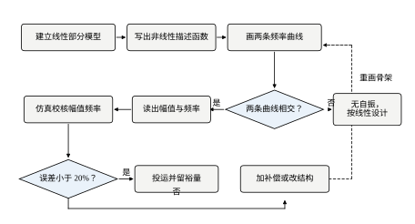
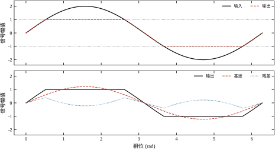
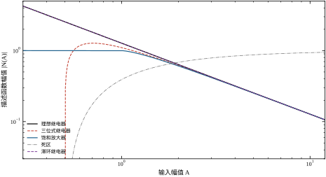
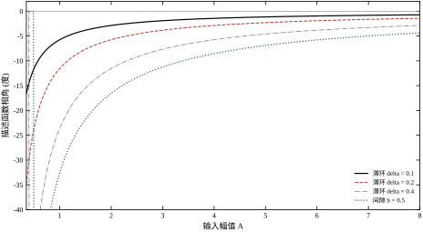
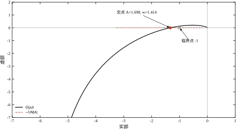
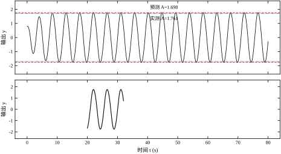
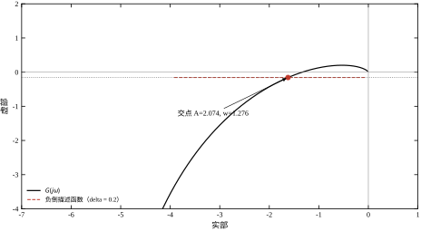
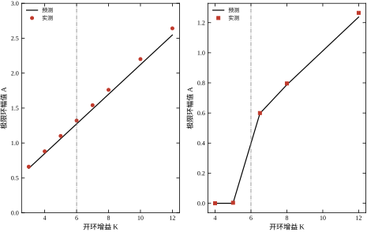
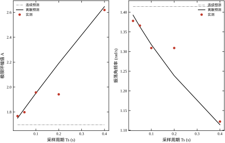
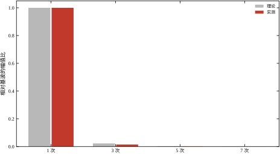

一台 2 kW 的恒温箱，电热丝由过零触发的可控硅供电——它只有“通”和“断”两种状态，没有中间档。控制器是一只普通的 PI，输出 4–20 mA 连续信号，再经占空比调制折算成平均功率。
设定 60 ℃。实测温度却一直在 59.4 ℃ 到 60.6 ℃ 之间来回摆动，周期约 40 s，永不停止。把比例增益调小，摆幅略减、周期变长；把积分时间调短，摆得更凶。
按线性理论，这套回路的两只闭环极点都在左半平面，阻尼比 0.7 左右，阶跃响应该是单调爬升、最多一次小超调。它不该振荡，更不该永远振荡下去。
差别出在哪？PI 算出来的是“平均功率 37%”，加热器实际执行的是“满功率 0.37 s、零功率 0.63 s”。这个把连续量砍成两档的动作，是一个继电器。线性传递函数里没有这种环节的位置：它的输出不随输入连续变化，输入过零时输出跳变，增益在跳变点是无穷大。
本章用一个更干净的对象把这件事算穿。取
G(s)=\frac{K}{s(s+1)(s+2)},\qquad K=8
单位负反馈，前向通道串一只理想继电器：输入为正输出 +1，输入为负输出 -1，输入为零输出零。给 0.1 的初扰动，数值积分 120 s，从第 60 s 起统计波形：等幅振荡，幅值 1.7610，角频率 1.3803 rad/s，三次谐波只占基波的 1.49%。
这个结果既不是发散也不是收敛，而是一个稳定的周期解：初值给大一点，摆幅会自己收回来；初值给小一点，摆幅会长上去；最后都停在同一对 (\omega,A) 上。这种孤立的、有吸引性的闭轨叫极限环。它是非线性系统独有的现象——线性系统要么收敛到平衡点，要么发散，要么在临界增益上做“等幅振荡”，但那个等幅振荡是临界状态，参数差一点点就破坏，不像极限环那样有吸引域。
三条原因，逐条说清。
第一，叠加原理不成立。 继电器对 e_1+e_2 的响应不是对 e_1 的响应加对 e_2 的响应。饱和、死区、间隙、摩擦全都如此。叠加原理一倒，傅里叶分解、传递函数、卷积这一整套工具的前提就没了。
第二，不存在“那个”传递函数。 同一个继电器，输入幅值 0.1 时输出是方波，等效增益约 4/(\pi\cdot0.1)=12.7；输入幅值 10 时还是方波，等效增益只有 0.127。等效增益随输入幅值变——这是非线性环节最本质的特征，也是描述函数要捕捉的唯一信息。
第三，Nyquist 判据问的问题变了。 它原本问“闭环极点在不在左半平面”，而非线性系统没有极点这个概念。要问的问题必须改写成：“这个回路会不会自己振起来？振起来幅值多大、频率多高？”
描述函数的做法是：只让正弦进去，只取基波出来，把两者的复数比当成这个环节的等效增益。
设非线性环节输入 e(t)=A\sin\omega t，输出 y(t) 是周期为 2\pi/\omega 的畸变波形。把它展成傅里叶级数，只保留与输入同频的那一项，写成 Y_1\sin(\omega t+\varphi)。定义
N(A)=\frac{Y_1}{A}e^{j\varphi}
于是这个环节在“输入幅值为 A 的正弦”这一特定工况下，被替换成了一个复数增益 N(A)。整条回路就变回了线性系统，可以照搬频域那套：
1+N(A)G(j\omega)=0 \tag{49-1}
或者写成更好用的形式
G(j\omega)=-\frac{1}{N(A)} \tag{49-2}
这个方程是本章的全部。 左端只随 \omega 变，是一条曲线；右端只随 A 变，是另一条曲线。两条曲线在复平面上相交，交点就给出自振的角频率和幅值。
请注意一个结构性的事实：线性系统里 1+KG(j\omega)=0 只有 \omega 一个未知数，一般无解——要么恒不成立（稳定），要么只在某个临界 K 上成立。非线性系统里 N 依赖 A，多出一个自由度，一个复方程拆成两个实方程，正好定出 \omega 与 A 两个未知数。方程有解，解就是极限环。这就是为什么“多了一个可变增益”反而让问题变得可解。
继电器温控。 摆幅由滞环宽度和对象的时间常数共同决定。把开关周期从 40 s 压到 4 s 靠的是减小滞环，而不是调 PID 参数——这一点 §49.8 会给出定量的换算。
阀门死区导致的爬行。 调节阀的阀杆有 0.5% 的死区，定位器输出在死区内变化时阀位不动。液位回路因此出现缓慢的、周期长达几分钟的等幅摆动，现象上像“积分饱和”，实际上是死区加积分造成的极限环。
高增益伺服饱和引起的抖动。 位置环增益调到 K/K_c=1.3 以上，电机在到位后不停地小幅来回抖，电流波形是方波。降增益能压住，但会牺牲快速性；正确的做法是看 -1/N 曲线决定还能留多少裕量。
这三个场景的共同点是：振荡的幅值不由初始条件决定，而由系统结构决定。 换一个初值、换一个扰动，摆幅还是那么大。这是极限环的签名，也是描述函数能算出它的原因。

图 49-10 是全章的骨架。八步可以压成四句话：建模（线性部分 + 非线性环节）→ 画两条曲线 → 读交点 → 仿真校核。第三句里“两条曲线相交吗”这个判断，把问题分成两支：不相交就说明没有自振，按线性方法设计即可；相交就说明存在极限环，要读幅值、读频率，再决定是接受、是压小、还是改结构。
后面各节按这条主线展开：§49.2 给数学原理，§49.3 把八步细化成可执行的设计步骤，§49.4 与 §49.5 分别处理连续与离散两种情形，§49.6 讨论交点附近的稳定性与性能，§49.7 逐条解释各参数的作用，§49.8 给调参经验，§49.9 讲改进（双正弦、参数不确定性），§49.10 讲现场落地，§49.11 划边界，§49.12 给可运行代码。
与相平面法（第 48 章）：相平面给的是精确几何，但要二维状态，三阶以上画不出来；描述函数是近似，但对阶数没有限制，而且直接给出频率——现场最想知道的恰恰是“多少赫兹”。
与圆判据、Popov 判据（第 50 章）：那两条判据给的是“绝对稳定”的充分条件——只要非线性落在某个扇形里，无论它具体长什么样都不会自振。代价是保守。描述函数给的是“某一个具体非线性在某一个幅值下的近似解”，不保守但只是近似。两者是“上界”与“估计”的关系。
与 PID 整定（第 44 章）：PID 整定假设执行机构线性。一旦执行机构饱和或带死区，整定出来的增益可能正好落在自振区里。本章给出的 K_c 就是那条线。
数学准备：三样，都是学过的。 一是复数运算与复平面——本章所有的图都画在复平面上；二是频率特性的基本读法（模、相角、负实轴穿越），第三到五章已经讲过；三是傅里叶级数的“取基波”这个动作，不需要会推导，只需要接受“周期函数可以拆成一堆正弦”。不需要矩阵、不需要 Lyapunov 函数、不需要状态空间——这是本章相对于现代控制部分的最大门槛优势。
工具准备：一支笔、一张复平面图纸、一个能跑 Python 的环境。 复平面图纸用来手画 -1/N 与 G，这一步不能用代码替代，因为手画的过程正是建立直觉的过程。代码用 §49.12 的脚本，五百行，只依赖 numpy 与 scipy。
心理准备：接受“近似”。 本章所有数字都带 3\%\sim5\% 的先天误差，所有结论都是“按这个非线性形状估”。习惯精确解的人会不适应，但工程上这类“带明确误差方向的估计”往往比“精确但跑不完的仿真”更有用。如果一个结论必须精确到 1\% 才能用，那就不该用描述函数。
最后，最好有一样真实的对象。 一台继电器温控箱、一个带死区的阀门、一个会抖的伺服，哪怕是实验室的小装置。手里有一个会振的东西，本章的每一步都能对上号；只有公式没有对象，很容易读成“数学练习”。
设非线性环节是静态的、奇对称的（f(-x)=-f(x)，继电器、饱和、死区都满足），输入 e=A\sin\theta，\theta=\omega t。输出 y(\theta)=f(A\sin\theta) 是周期 2\pi 的函数，展成傅里叶级数：
y(\theta)=a_0+\sum_{k=1}^{\infty}\left(a_k\cos k\theta+b_k\sin k\theta\right)
奇对称保证 a_0=0，且只含奇次谐波。取基波：
b_1=\frac{1}{\pi}\int_0^{2\pi}y(\theta)\sin\theta\,\mathrm d\theta,\qquad a_1=\frac{1}{\pi}\int_0^{2\pi}y(\theta)\cos\theta\,\mathrm d\theta
定义描述函数为基波复相量与输入复相量之比：
N(A)=\frac{b_1+j a_1}{A} =\frac{1}{\pi A}\int_0^{2\pi}y(A\sin\theta)\sin\theta\,\mathrm d\theta +j\frac{1}{\pi A}\int_0^{2\pi}y(A\sin\theta)\cos\theta\,\mathrm d\theta \tag{49-3}
这个定义把两件事一次说清：
N(A)=|N(A)|e^{-j\varphi},\qquad |N(A)|=\frac{|Y_1|}{A} \tag{49-4}
虚部为负即代表相位滞后。 这个符号约定在 §49.2.4 决定 -1/N 曲线画在上半平面还是下半平面，务必记牢。
对单值奇对称环节（饱和、死区、理想继电器），y(\theta) 关于 \theta=\pi/2 偶对称，\cos\theta 的加权积分为零，故 N 是实数。只有带记忆的环节（滞环、间隙、摩擦）才有非零虚部——因为它们“记得”上一段行程，输出必然滞后。

图 49-1 用饱和放大器把定义画了出来。中间那幅图里，粗线是实际输出，细线是它的基波；两者的差就是下面那幅残差。描述函数只认细线，对残差视而不见——这个“视而不见”是否合理，取决于 §49.2.3 的低通假设。
数值实现上，式 (49-3) 的两个积分用等距求和代替即可。本书代码用 2048 个采样点，与解析式对比能吻合到四位有效数字（见 §49.12 输出段 [一]）。
工程上九成的非线性可以归到五种里。表 49-1 给出解析式与本书算例的关键数值。
| 环节 | 参数 | N(A) | 关键数值 |
|---|---|---|---|
| 饱和 | 斜率 k，线性区 \pm a | A\le a：k；A>a：\dfrac{2k}{\pi}\left[\arcsin\dfrac{a}{A}+\dfrac{a}{A}\sqrt{1-\dfrac{a^2}{A^2}}\right] | a=1：A=1.5\to0.7809，2.0\to0.6090，3.0\to0.4164 |
| 死区 | 斜率 k，死区 \pm d | A\le d：0；A>d：\dfrac{2k}{\pi}\left[\dfrac{\pi}{2}-\arcsin\dfrac{d}{A}-\dfrac{d}{A}\sqrt{1-\dfrac{d^2}{A^2}}\right] | d=0.5：A=1.0\to0.3910，2.0\to0.6850 |
| 理想继电器 | 输出 \pm M | \dfrac{4M}{\pi A} | M=1：A=1\to1.2732，A=2\to0.6366 |
| 三位式（带死区继电器） | \pm M，死区 \pm d | \dfrac{4M}{\pi A}\sqrt{1-\dfrac{d^2}{A^2}} | 死区压低等效增益 |
| 滞环继电器 | \pm M，环宽 \pm d | \dfrac{4M}{\pi A}\left[\sqrt{1-\dfrac{d^2}{A^2}}-j\dfrac{d}{A}\right] | d=0.2：A=2\to0.6366\angle-5.74^\circ |
| 间隙 | 斜率 k，间隙 b | 查表（含记忆，复数） | b=0.5：A=2\to0.8392\angle-16.53^\circ |
表 49-1 五种常见非线性的描述函数。第四列为本书算例的实算值，参数取 k=1、M=1
饱和与死区的公式不必死记，但两条极限必须记住：
继电器一族更简单：N 的模恒为 4M/(\pi A)（滞环与三位式的模因 \sqrt{1-(d/A)^2} 略小），相角由滞环宽度决定。理想继电器的 N=\tfrac{4}{\pi A} 是纯实数，A=1 时等于 1.2732，即“输入 1 的正弦，基波输出 1.2732”，这个数大于 1 是对的——方波的基波幅值本来就比同幅值的正弦大 4/\pi 倍。


图 49-2 的横纵轴都取对数，因此 1/A 这段变成直线，斜率 -1。饱和与死区的曲线在中段有个“拐”，拐点分别落在 A=a 与 A=d 上——这两个参数决定“从什么时候开始不线性”。图 49-3 只有两条曲线离开零度：滞环的相角是 \arcsin(d/A)，A 越大滞后越小，趋向零；间隙的滞后更大，A=2、b=0.5 时已达 16.53^\circ。
描述函数的整个推导建立在“高次谐波被线性部分滤掉”这个假设上。量化它：若非线性输出中 k 次谐波幅值是基波的 \rho_k 倍，经过线性部分后变成 \rho_k|G(jk\omega)|，占基波的比例为
\varepsilon_k=\rho_k\frac{|G(jk\omega)|}{|G(j\omega)|} \tag{49-5}
主例的参数是 \omega=1.4142。理想继电器输出方波，\rho_3=1/3、\rho_5=1/5。算出来的 |G(j\omega)|=1.3333，|G(j3\omega)|=0.09223，比值 0.0692，于是 \varepsilon_3=2.31\%；五次为 0.323%，七次 0.086%。实测波形里三次谐波占基波 1.49%，比估计值还小。
2.3% 的残差，就是描述函数全部误差的来源。 它决定了这套方法的精度上限：任何情况下都不要指望比 3%–5% 更准。
反过来，低通假设给出了适用条件。若线性部分在 3\omega 处的幅值衰减不到基波的一半（例如对象是一个纯增益，或者相位穿越频率远高于第一个谐振峰的低阻尼系统），残差就会超过 10%，描述函数的结论不再可信。§49.11 会把这条写成可检查的判据。
式 (49-2) 的右端 -[1/N(A)] 画在复平面上，就是“负倒描述函数曲线”。它的形状由 N(A) 的相角决定，分两大类。
第一类：N 为实数的环节。 饱和、死区、理想继电器、三位式。此时 -1/N 是一条沿负实轴的射线。以理想继电器为例，N=4M/(\pi A)，故
-\frac{1}{N(A)}=-\frac{\pi A}{4M}
A 从 0^+ 增到 \infty，这点从原点沿负实轴走向 -\infty。A\to0 时等效增益无穷大，曲线缩在原点附近；A\to\infty 时等效增益趋零，曲线跑到无穷远。
第二类：带记忆的环节。 滞环的描述函数是复数，其负倒数不再落在实轴上。把 N=\dfrac{4M}{\pi A}\left(x-jy\right)（其中 x=\sqrt{1-(d/A)^2}、y=d/A，注意 x^2+y^2=1）代入：
-\frac{1}{N}=-\frac{\pi A}{4M}\left(x+jy\right) =-\frac{\pi}{4M}\sqrt{A^2-d^2}-j\frac{\pi d}{4M} \tag{49-6}
虚部是常数。 式 (49-6) 说明滞环的 -1/N 是一条水平线，纵坐标恒为 -\pi d/(4M)，与幅值无关；实部随 A 增大往左走。取 d=0.2、M=1，虚部等于 -0.1571；本书算例段 [四] 用数值方法算出的正是这个数。
这个结论极有用：滞环宽度直接决定自振点离实轴多远。 环越宽，G 曲线必须“更高”才够得着，于是自振频率被压低、幅值被抬高。§49.7.4 会用一条扫描曲线把这条规律量化。
间隙的 -1/N 同样偏离实轴，但其形状是弯的而不是水平线，因为它没有滞环那样干净的 |N| 与相角分离的表达式。同宽度下间隙的滞后比滞环略大：b=0.5、A=2 时是 16.53^\circ，而 d=0.5、A=2 的滞环是 14.48^\circ。量级相当，所以两者的现场表现很像，只能靠“间隙在换向时有一段完全不动的死行程”来区分。
式 (49-2) 是复数方程，拆成幅值与相角两个实方程：
|G(j\omega)|=\frac{1}{|N(A)|} \tag{49-7}
\angle G(j\omega)=-180^\circ-\angle N(A) \tag{49-8}
两式联立解出 (\omega,A)。几何上就是：把 G(j\omega)（\omega 从 0 到 \infty）与 -1/N(A)（A 从 0 到 \infty）画在同一张复平面上，交点即解。
注意式 (49-8) 里 -\angle N 的符号。N 有滞后时 \angle N<0，于是 \angle G=-180^\circ+|\angle N|，要求的相移不到 180^\circ。物理意义清楚：非线性环节自己已经贡献了一部分滞后，线性部分就少欠一点。
主例的读法：G(j\omega) 在 \omega=\sqrt2 处穿过负实轴，|G(j\sqrt2)|=8/6=1.3333。代入式 (49-7)，1/N=1.3333，即 N=0.75，由 N=4M/(\pi A) 解出
A=\frac{4M}{\pi N}=\frac{4\times1}{\pi\times0.75}=1.6977 \tag{49-9}
预测自振点：\omega=1.4142 rad/s，A=1.6977。仿真实测 \omega=1.3803、A=1.7610，幅值误差 +3.73\%、频率误差 -2.40\%。

图 49-4 里两条线的形状值得细看。G(j\omega) 从第三象限的无穷远出发，向上穿过负实轴后拐进第二象限，最后趋近原点。-1/N 是一条压在实轴上的射线，从原点向左延伸。它们只交一次——这次交点的位置由 |G(j\sqrt2)| 这一个数决定。
为什么交点只有一个。 因为 -1/N 是单调的射线，而 G 只在一点穿过负实轴。若非线性换成滞环，-1/N 变成一条水平线，交点就由“G 的虚部等于 -\pi d/(4M)”这个条件决定，\omega 会略低于 \sqrt2，幅值相应变大。这个变化在 §49.4 有完整数字。
两条曲线相交只说明“方程有解”，还不能说明这个解是能维持的极限环，还是“一碰就跑”的假解。判据的做法很朴素：在交点处把 N(A) 看成常数，问一句“这个线性闭环稳不稳”。
具体分三步：
若 A 略大于 A^* 时闭环稳定、略小于 A^* 时不稳定，则 A^* 是稳定极限环：幅值一旦超过 A^*，系统收敛回来；一旦低于 A^*，系统发散上去。反之则是不稳定极限环，实际中观察不到（任何微小扰动都会把它推走）。
主例验证：A=1.6977 时 N=0.75，N|G(j\sqrt2)|=0.75\times1.3333=1，正好临界。A 略大，N 略小，环路增益小于 1，线性闭环稳定，幅值回落；A 略小，N 略大，环路增益大于 1，线性闭环不稳定，幅值上升。所以 A=1.6977 是稳定极限环——仿真里从 0.1 的初扰动长到 1.76 并稳住，正是这个机制。
几何上有等价的记忆法：沿 A 增大的方向看 -1/N 曲线，若它从 G 曲线所围区域内部走向外部，交点对应稳定极限环。 对继电器，A 增大时 -1/N 沿负实轴向左跑，跑出 G 的包围圈，故稳定。这个口诀好用，但遇到 -1/N 自身有折返（间隙在某些参数下）时要回到“当常数判稳定性”的三步法，不要硬套。
表 49-2 把三种情形并排列出，供现场快速对照。
| 情形 | 交点 | A 增大时 -1/N 的走向 | 结论 | 实测现象 |
|---|---|---|---|---|
| 稳定极限环 | 有 | 由内向外 | 能观察到等幅振荡 | 摆幅稳定在 A^* |
| 不稳定极限环 | 有 | 由外向内 | 观察不到，扰动即离 | 要么收敛要么发散 |
| 无交点 | 无 | — | 无自振 | 按线性系统表现 |
表 49-2 交点与稳定性的三种情形。判据统一表述为“把 N(A^*) 当常数，看线性闭环稳定性是否随 A 翻转”
描述函数的误差有三个来源，按影响大小排序。
一是丢掉了高次谐波。 这一项在主例里是 2.31%（理论）对 1.49%（实测），量级最小但无法消除。
二是“基波幅值”不等于“实际峰值”。 描述函数算的是基波幅值，仿真测的是波形峰值。理想继电器的输出是方波，其基波幅值 4M/\pi 比峰值 M 大 27%；反馈信号经过积分器后被平滑，但仍有残余，于是实测幅值系统性偏大。这是主例 +3.73\% 误差的主项。
三是 N(A) 对波形形状敏感。 实际的继电器有动作延时、有触点抖动、有回差，都不在理想模型里。滞环宽度估错 0.05，幅值预测就偏 4%——§49.7.4 的扫描表会给出这条灵敏度。
工程上处理这三项误差的办法是一致的：把描述函数的预测值当成“下界”，实际摆幅按 +3\% 到 +5\% 估。 本书全部继电器类算例的幅值误差都落在 +3.17\% 到 +3.73\% 这个窄带里，这不是巧合，而是“只取基波”这一刀切下去必然留下的偏差方向。
式 (49-2) 是复数方程，一个等式里含两个实条件。把它按式 (49-7) 与式 (49-8) 拆成幅值与相位两条，是手算时最常用的形式：幅值式 |G(j\omega)|=1/|N(A)| 只管模，相位式 \angle G(j\omega)=-180^\circ+\varphi(A) 只管相角，其中 \varphi(A)=-\angle N(A)\ge0 是描述函数带来的相位滞后。两式的分工很清楚：相位式解出 \omega，幅值式再解出 A。
对滞环，\varphi=\arcsin(d/A)，于是相位式写成 \angle G=-180^\circ+\arcsin(d/A)。这个负号容易被写错，检查办法是代一个数：d=0.2、A=2.0743 时 \arcsin(0.0964)=5.53^\circ，所以 G 在自振点的相角应是 -174.5^\circ 而不是 -185.5^\circ——滞环让系统在“线性部分相移只有 174.5^\circ”的频率上振荡，这个频率比 \omega_x 低；若把符号写反成 -180^\circ-\varphi，就会解出比 \omega_x 还高的频率，与实测的 1.2496 差得更远。原因很直观：继电器自己贡献了这 5.5^\circ 的滞后，线性部分就不用贡献那么多，于是交点沿 G 曲线往低频方向滑了一小段。
幅值式对滞环是 |G|=\pi A/[4M\sqrt{1-(d/A)^2}]，把 A 解出来就是式 (49-16)。
对饱和、死区、理想继电器，\varphi=0，两式退化成 |G|=1/|N| 与 \angle G=-180^\circ。这就是“无记忆非线性只改幅值、不改频率”的数学原因——不是物理直觉，而是相位式里根本没有 A。
两种写法各有用途：复数式适合写代码（把 G 与 -1/N 都当复数数组，找最近点），幅相式适合手算与解释（相位式与幅值式各自对应一个物理量）。本书后面凡是需要“讲清楚为什么”，用的都是幅相式。
§49.2.2 直接给了五个公式，看起来各不相同，其实推导走的是同一条路。掌握这条路，遇到新的非线性可以自己算。
第一步，用对称性砍掉一半积分。 奇对称 f(-x)=-f(x) 保证 a_0=0、a_1=0；半波对称 y(\theta+\pi)=-y(\theta) 使后半周的贡献与前半周相同，于是 b_1=\frac{2}{\pi}\int_0^{\pi}y(\theta)\sin\theta\,\mathrm d\theta。原来要积 2\pi，现在只积 \pi，而且只关心前半周。
第二步，找折点。 把非线性在时域上的折点换算成角度。饱和的折点在 x=a，对应 \theta_a=\arcsin(a/A)；死区的折点在 |x|=d，同样是 \arcsin(d/A)；滞环有两个折点，分别在上升沿与下降沿，错开一个 2\arcsin(d/A)。
第三步，分段积分。 每段里 y(\theta) 要么是常数、要么是 kA\sin\theta，积分只有两个基本结果：\int\sin^2\theta\,\mathrm d\theta=\theta/2-\sin2\theta/4 与 \int\sin\theta\,\mathrm d\theta=-\cos\theta。
第四步，整理成“幅值 × 形状因子”。 结果总可以写成 N(A)=\frac{4M}{\pi A}\cdot(\text{形状}) 或 N(A)=k\cdot(\text{形状})，形状因子只依赖于 a/A 或 d/A 这个无量纲比值。这就是为什么所有 N(A) 都只依赖“幅值相对折点的倍数”——把 A 与 a 同时放大两倍，N 不变。
拿继电器走一遍：y=M 在 (0,\pi) 上恒成立，于是 b_1=\frac{2}{\pi}\int_0^\pi M\sin\theta\,\mathrm d\theta=\frac{4M}{\pi}，N=\frac{4M}{\pi A}。三步就得完了，因为它的折点只有一个、且恰好落在 \theta=0。
饱和多一个折点，积分分成两段：线性段贡献 kA(\theta_a-\frac{\sin2\theta_a}{2})，饱和段贡献 2ka\cos\theta_a，合并后就是 §49.2.2 里那条含 \arcsin 与 \sqrt{1-a^2/A^2} 的式子。死区是它的“补集”，把两段的被积函数对调即可。
滞环的不同之处在于它不满足“输出只依赖当前输入”，所以输出在一个周期内不对称，a_1\ne0，描述函数出现虚部。这也解释了为什么带记忆环节的 N(A) 一定是复数：虚部就是“输入与输出之间的相位差”。
一个自检办法： 算完 N(A) 之后，检查两个极限。A\to\infty 时，非线性在大部分时间里处于常值区，N\to 该区的等效斜率：继电器趋于 0、饱和趋于 2ka/(\pi A)、死区趋于 k。A 趋于折点时，饱和给出 N\to k（幅值刚够到折点，几乎不削顶）；死区恰好相反，A\to d^+ 时 N\to0（输出几乎全是零）。两个极限都对，中间就不会错得离谱。
描述函数法只能处理一个非线性环节。回路里若有两个以上，标准的处理是把最靠近执行器、或者增益最强的那一个留作非线性，其余全部线性化到工作点。
怎么切？沿着信号流找一个自然的断点：非线性环节的输入、输出都是可测的物理量。继电器回路的断点在继电器线圈电压与触点状态之间；饱和回路的断点在控制器输出与执行器行程之间。切完之后，非线性环节用它的输入幅值 A 和输出函数 f(\cdot) 描述，剩下的部分——对象、传感器、控制器、滤波器——全部并成一个 G(s)。
这里有一个容易犯的错：把 PI 控制器也塞进非线性环节。PI 是线性的、有状态的，必须留在 G(s) 里，否则 N(A) 的推导前提（静态、无记忆）就不成立。同理，采样保持器、滤波器都要留在 G(s) 里，它们恰恰是低通假设能成立的原因。
五种典型环节只有两三个参数，但必须问清楚三件事。
幅值量级。 继电器输出 \pm M 是几伏、几安？饱和电平 a 是阀门行程的百分之几？这些数决定 -1/N 曲线落在哪一段，直接决定幅值预测。
是否存在记忆。 只要有回差、有摩擦、有触点弹跳，就必须用复数的 N(A)，不能用实数的。判断方法很简单：让环节的输入缓慢地来回走一遍，画输入—输出图，若围出一个有面积的环，就有记忆，环的宽度就是 d。
参数是否随工况变。 电磁阀的吸合电流随温度漂，摩擦随磨损变。这些不确定性在 §49.9 里用“参数带”处理，设计阶段先取额定值。
不要只算一个点，要画整条曲线。做法是让 A 在 [0.1a, 100a] 上取 30–50 个对数等距的点，逐点算 N，再取负倒数。画出来之后先看形状：是压在实轴上的射线，还是一条水平线，还是一条带折返的曲线？形状决定后面怎么找交点。
对数等距取样不是讲究，是必需：N 按 1/A 衰减，线性取样会在小 A 处挤成一团、大 A 处稀疏得看不出走向。
G(j\omega) 是线性部分的频率特性，画法与传统 Nyquist 图完全一样。真正要标出来的是三类特殊点：
对主例，第一类点只有一个：\omega_x=\sqrt2，G(j\sqrt2)=-1.3333。若把 \omega 从 0.5 扫到 3，|G| 依次是 6.9418、2.5298、0.6325、0.2339（对应 \omega=0.5,1,2,3），可见幅值随频率单调下降，这也是“交点唯一”的原因。
交点用数值方法解最稳：对 G(j\omega) 与 -1/N(A) 两条离散点列，找距离最近的一对点，再用局部插值细化。比“先解相位方程再代回幅值”更抗病态，因为相位在 -180^\circ 附近变化很快。
解出 (\omega,A) 之后，按 §49.2.6 的三步法判稳定性：把 N(A^*) 当常数，看线性闭环在 A^*\pm5\% 处的稳定性是否翻转。只有翻转方向正确（A 大时稳、A 小时不稳）的交点才对应能观察到的极限环。
这一步是全书反复强调的纪律：任何解析结论都要用一次非线性仿真确认。 仿真不需要复杂，§49.12 的 sim_loop 五十行就够——用矩阵指数把线性部分按零阶保持精确离散，每个步长调用一次非线性环节，取末段 30 s 做过中点定时与正弦投影，得基波幅值与频率。
校核之后三选一：
§49.10 会给出这三条在工程上的具体做法与成本。
| 步 | 动作 | 产出 | 常见错误 |
|---|---|---|---|
| 1 | 切分线性/非线性 | G(s)、f(\cdot) | 把 PI 或滤波器算进非线性 |
| 2 | 定非线性参数 | M、a、d、k | 用额定值忽略温漂与磨损 |
| 3 | 算并画 -1/N(A) | 曲线形状与走向 | 线性取样，看不出趋势 |
| 4 | 画 G(j\omega) | 穿越点、-1 点 | 漏掉等虚部点 |
| 5 | 求交点、判稳定 | (\omega^*,A^*) | 只解相位方程不做细化 |
| 6 | 非线性仿真 | 实测 (\omega,A)、谐波占比 | 仿真时长不够，未进入稳态 |
| 7 | 与预测比对 | 误差是否在 5% 内 | 差 20% 还硬用解析值 |
| 8 | 三选一处置 | 接受/压低/改结构 | 只降增益，牺牲快速性 |
表 49-3 描述函数法的八步设计清单。第 6、7 步不可跳过，它们是这套近似方法唯一的把关环节
表 49-3 的第 8 步值得多说一句。现场最常见的处置是“降增益”——它确实能把摆幅压小，但对继电器系统往往无效，因为交点位置由 |G(j\omega_x)| 决定，降增益只是把整条 G 曲线往原点缩，交点跑到更小的 A 上，摆幅按比例缩小，频率几乎不变。§49.4 的增益扫描会把这个规律量化。
把八个步骤在主例上完整走一遍，看清每一步“进去什么、出来什么”。
第 1 步，切分。 非线性的断点选在继电器线圈电压与触点通断之间，M=1（归一化）；线性部分包括驱动级、加热器、箱体热惯性、温度传感器与变送器，实测阶跃响应拟合出 G(s)=8/[s(s+1)(s+2)]。注意此时 G 里已经含了 K=8 这个总增益，后面不要再乘一次。
第 2 步，定参。 理想继电器只有一个参数 M；实际继电器还有回差，用手动给定值来回走一遍，输入—输出图围出的环宽是 0.2，所以 d=0.2。两个模型都要算：d=0 给出“最好情况”，d=0.2 给出“实际值”，两者的差距就是“回差这一项值多少”。
第 3 步，画 -1/N。 A 从 0.1 取到 10，-1/N=-\pi A/4 从 -0.0785 一路压到 -7.854，全部落在负实轴上，A 增大时往左走。d=0.2 时整条线抬高到 \operatorname{Im}=-0.1571。
第 4 步，画 G。 关键读数只有一个：\omega_x=\sqrt2=1.4142 处 G=-1.3333。顺便记下 |G| 随 \omega 单调下降（\omega=0.5 时 6.9418，\omega=3 时 0.2339），单调性保证交点唯一。
第 5 步，求交。 -1/N=-1.3333 给出 N=0.7500，再由 N=4/(\pi A) 得 A=1.6977；\omega^*=\omega_x=1.4142。判稳：A 增大时 |N| 减小、等效环路增益减小，系统趋向稳定，所以这是稳定极限环，能被观察到。
第 6 步，仿真。 从 y(0)=0.1 出发跑 150 s，末段 40 s 统计：A=1.7610、\omega=1.3803、三次谐波 1.49%。波形见图 49-6。
第 7 步，比对。 幅值 +3.73\%、频率 -2.40\%，都落在本书给的经验带内（幅值 +3\%\sim+5\%、频率 \pm3\%）。模型可信，可以拿这张纸上的数去回答现场问题。
第 8 步，处置。 假设工艺允许的温度波动是 \pm0.3 K，而 1 个单位幅值折合 1 K，那么 A=1.76 意味着 \pm1.76 K，超标近六倍，必须处理。三条路的实际效果：
这张推演图说明了一件事：描述函数法最大的价值不是给出 1.6977 这个数，而是让你在第 8 步之前就知道“哪条路走得通”。 如果只看仿真波形，你会试着调增益，花两天才发现调不动；先算一遍，十分钟就知道必须换执行器或改结构。
八步不必每次都全做，但要分清省掉的是“劳动”还是“保险”。
可以省的： 第 3、4 步的作图。有代码时数值扫描代替手画，只要记得把 -1/N 与 G 画在同一张复平面上看一眼形状——形状错了一眼就能发现，数值对不出来反而难查。
可以简化的： 第 5 步的稳定性判定。若交点唯一、两条曲线都单调，直接用“A 增大时 -1/N 由内向外”这个口诀即可，不必做 A^*\pm5\% 的稳定性扫描。
不能省的： 第 1 步的切分、第 2 步的 d、第 6 步的仿真、第 7 步的比对。
第 1 步切错，后面全错，而且错得很有条理——你会得到一组自洽但与现场无关的数字。第 2 步的 d 是最敏感的参数，估错 0.05 幅值就偏 4\%（§49.7.4）。第 6 步是唯一的把关环节，没有它，前面五步只是算术练习。第 7 步看似最没技术含量，其实是整套方法里信息量最大的一步：它不产出数字，它产出“这套模型对这台设备可信到什么程度”这个判断。 后面所有的设计决策都建立在这个判断上。
一个常见的走偏是顺序颠倒：先跑仿真看到振荡，再回头补描述函数“解释一下”。这样做的结果是解释永远追着现象跑，遇到新工况又要重新解释。正确顺序是先算、再仿、后比对，让仿真去检验解析，而不是让解析去追认仿真。
把 §49.2.5 的预测与 §49.12 的仿真并排放：

图 49-6 上半幅是时域波形。前 20 s 是从 0.1 的小扰动“长”上来的过程，幅值单调增到 1.76 后不再变化；下半幅是同一段数据画在 (e,\dot e) 平面上，收敛到一条闭合曲线。这条闭轨就是极限环的几何形态，它的尺寸与初值无关。
频率误差 -2.40\% 需要解释一下：描述函数预测的 \omega 由 \operatorname{Im}G(j\omega)=0 定出，而实际波形的基波频率会被三次谐波“拉”一点——方波经三阶系统滤波后，上升沿比纯正弦更陡，过零时刻提前，测出来的周期略短、频率略高。这里实测频率反而更低，说明主要影响因素是相位：实际继电器的切换不是瞬时完成的（仿真里用了 0.5 ms 步长），引入了一点额外滞后。
把理想继电器换成带滞环的（M=1、d=0.2），其余不动。此时 -1/N 不再压在实轴上，而是水平线 \operatorname{Im}=-\pi d/(4M)=-0.1571。交点条件变成两个方程：
\operatorname{Im}G(j\omega)=-\frac{\pi d}{4M},\qquad A=d\sqrt{1+\left(\frac{4M\operatorname{Re}G(j\omega)}{\pi d}\right)^2} \tag{49-10}
第一式定 \omega，第二式定 A。这比理想继电器多了一步：\omega 不再由 \operatorname{Im}G=0 给出，而是由“虚部等于某个负常数”给出。因为 G 在 \omega<\sqrt2 处虚部为负且随 \omega 增大而上升（趋向零），所以要求的 \omega 必然低于 \sqrt2。
算出来的结果是 \omega=1.2764、A=2.0743；仿真实测 \omega=1.2496、A=2.1416，幅值误差 +3.24\%、频率误差 -2.10\%。与理想继电器对照：
| 环节 | 预测 \omega | 预测 A | 实测 \omega | 实测 A | 幅值误差 |
|---|---|---|---|---|---|
| 理想继电器 | 1.4142 | 1.6977 | 1.3803 | 1.7610 | +3.73\% |
| 滞环 d=0.2 | 1.2764 | 2.0743 | 1.2496 | 2.1416 | +3.24\% |
表 49-4 理想继电器与滞环继电器的对照。仅 0.2 的环宽，就把幅值抬高了 22%、频率压低了 10%

图 49-5 把这件事画得很清楚。水平线与 G 曲线的交点不在负实轴上，而在第四象限靠近实轴的位置。这条水平线的高度只由 d 决定，d 越大线越低，交点越往左下走，幅值越大、频率越低。这解释了一个常见的现场经验：继电器回差调大，振荡反而变慢变粗。 慢是因为频率降了，粗是因为幅值涨了。
非线性换成饱和放大器（k=1、a=0.5），对象不变。饱和与继电器有一个本质区别：N(A)\le k，等效增益永远不超过线性增益。
于是 |G(j\omega_x)|\cdot N\le K/6。只要 K<6=K_c，环路增益在穿越频率处小于 1，方程 (49-1) 无解——无论幅值多大都不会自振。这跟继电器完全不同：继电器在任意 K 下都能振，因为 A 很小时 N 可以远大于 1。
| K | K/K_c | 预测 A | 实测 A | 实测/预测 | 实测 \omega |
|---|---|---|---|---|---|
| 4.0 | 0.67 | 无解 | 无自振 | — | — |
| 5.0 | 0.83 | 无解 | 无自振 | — | — |
| 6.5 | 1.08 | 0.5973 | 0.5997 | 1.004 | 1.4119 |
| 8.0 | 1.33 | 0.7878 | 0.7961 | 1.011 | 1.4056 |
| 12.0 | 2.00 | 1.2377 | 1.2653 | 1.022 | 1.3941 |
表 49-5 饱和系统的自振幅值随增益的变化（a=0.5，K_c=6）。K=4 与 K=5 的仿真末段幅值分别为 0.0000 与 0.0057，确认为零
表 49-5 有两处值得注意。
第一，幅值一越过 K_c 就直接跳到 a 附近，不是从零连续长上来的。 a=0.5，K=6.5 时预测 A 已经是 0.5973。这是饱和系统特有的跳跃现象：K 略小于 K_c 时方程无解（幅值为零），K 略大于 K_c 时解直接落在 A\approx1.2a 上，中间没有过渡。原因在 A=a 处 N 对 A 的导数等于零——曲线在那里是平的，方程的解要么不存在，要么跳到右侧。
第二，A 随 K 近似线性，但增长率略升。 K 从 6.5 增到 12（1.85 倍），A 涨到 2.07 倍，A/K 从 0.092 变到 0.103。原因是 A 超过 2a 后 N 只按 2ka/(\pi A) 衰减，环路增益涨多少，幅值就得跟着涨多少，于是回到与继电器相同的 1/A 规律。误差也随之从 0.4% 略增到 2.2%——高幅值下波形更接近方波，三次谐波占比固定为 1/3，被线性部分衰减后仍然留下了更大的绝对值。
把理想继电器接回来，把 K 从 3 扫到 12。由 N=6/K 与 A=4M/(\pi N) 直接得
A=\frac{4M}{\pi}\cdot\frac{K}{6}=\frac{2MK}{3\pi} \tag{49-11}
线性关系，M=1 时系数为 2/(3\pi)=0.2122。实测数据：
| K | 3 | 5 | 6 | 7 | 8 | 10 | 12 |
|---|---|---|---|---|---|---|---|
| 预测 A | 0.6366 | 1.0610 | 1.2732 | 1.4854 | 1.6977 | 2.1221 | 2.5465 |
| 实测 A | 0.6604 | 1.1006 | 1.3208 | 1.5409 | 1.7610 | 2.2013 | 2.6415 |
| 实测 \omega | 1.3803 | 1.3803 | 1.3803 | 1.3803 | 1.3803 | 1.3803 | 1.3803 |
表 49-6 理想继电器的增益扫描。幅值严格线性、频率严格不变，误差一律 +3.73\%

图 49-7 左图的实线与虚线是两条平行直线，间距就是那 3.73\% 的系统误差。频率那条线则是一条水平线——这是描述函数给出的一个很强的结构性结论：无回差继电器回路的自振频率由线性部分的相位穿越点唯一决定，与增益无关；增益只改幅值。
这个结论在现场很有用。看到一台继电器回路振得太粗，想压幅值只能降 K（代价是快速性）或减小 M（换执行器）；对无回差的继电器，降 K 不会改变频率，快速性的损失是“纯亏”。反过来，如果观察到振荡频率随增益明显变化，那就要么存在回差，要么存在采样滞后——这两者都会让 G 的虚部方程带上 K 或 T_s。
一、无回差继电器的自振频率是“线性部分的指纹”。 \omega^* 由 \operatorname{Im}G(j\omega)=0 决定，与执行器输出 \pm M 完全无关。测量振荡频率，就能反推线性部分的相位穿越点，进而判断模型对不对。有回差时这条失效：水平线高度 -\pi d/(4M) 不含 K，而 G 的虚部含 K，所以降增益会把 \omega^* 往下拖（§49.8.6 的数据：K 从 8 降到 3.2，\omega^* 从 1.276 降到 1.145）。
二、饱和系统有硬临界增益。 K_c 由 |G(j\omega_x)|=1 定出，与饱和电平 a 无关。K<K_c 时无论怎样扰动都不会自振；K>K_c 时幅值大致在 a 到 2a 之间，K 再大也只是缓慢增长。
三、滞环把“点”变成一个“区”。 理想继电器的自振幅值只有一个值；实际继电器有回差，回差使交点沿 G 曲线滑动，幅值与频率都随 d 连续变化。这也是为什么现场测到的继电器振荡总有一点“游走”，而不像仿真那样干净。
同一台对象（K=8）、同一个输入幅值量级，只换非线性环节，结果差别很大：
三条曲线摆在一起，能读出三件事。
第一，\omega^* 只被“有记忆”的非线性改变。 理想继电器与饱和放大器的 -1/N 都压在负实轴上，交点只能出现在 \operatorname{Im}G=0 处，所以两者的频率都是 1.414（实测 1.380 与 1.406，差在仿真的换向量化）。滞环的 -1/N 是一条水平线，交点跑到虚部为 -0.1571 的位置，频率就被拖到 1.276。换句话说：频率信息是判断“有没有回差”的指纹。 在现场，量一下振荡频率与线性模型的 \omega_x 一比，差 10\% 以上就说明存在记忆型非线性。
第二，幅值的量级由 N(A) 的尺度定，不由 G 定。 饱和的 N\le1，所以 A^* 必须在“N 足够小”的地方取值，而 N 掉到 0.75 以下需要 A>0.79；继电器的 N 可以远大于 1，交点落在 N=0.75 时 A 就得到 1.70。同一台对象、同样的环路增益，饱和系统的摆幅只有继电器的一半不到。 这是“把继电器换成线性放大器/PWM”能压摆幅的根本原因，与调参无关。
第三，误差的量级与波形的“方波程度”同向。 理想继电器的误差 +3.73\%，滞环 +3.24\%，饱和只有 +0.40\%\sim+2.22\%。波形越接近方波（继电器），丢掉的谐波越多，偏差越大；波形越接近正弦（饱和在 A\approx a 附近），偏差越小。
差 5\% 以内正常，差 20\% 以上必须查。查的顺序有讲究：先看频率，再看幅值。
频率差得多，说明线性模型有问题。 把实测频率代进 G(j\omega)，算一下相位：如果不到 -180^\circ（理想继电器）或没到 -\pi d/(4M) 对应的高度，说明 G 缺了环节。常见的是三样：滤波器没算进去、纯延迟没算进去、执行器动态没算进去。三者都只加相位、不怎么改模，所以症状是“频率对不上、幅值大致对”。
频率对、幅值差，说明非线性参数有问题。 幅值对 M 是线性敏感（A\propto M），对 d 是超线性敏感（§49.7.4 的 \mathrm dA/\mathrm dd\approx1.6）。实测幅值比预测大 20\%，要么实际 M 比额定值大（电源电压偏高、触点接触电阻小），要么实际回差比估计的大 0.1 以上。此时不要去动 G——动了 G，频率也会跟着变，两个误差就搅在一起了。
两者都差、而且波形明显不是正弦，说明低通假设失效。 判据是三次谐波占比：超过 10\% 就不能再用描述函数。这时要么换谐波平衡（§49.9），要么直接仿真。这一条最容易被忽略，因为它是“方法不适用”而不是“参数估错”，再多算几遍也修不好。
三处查完还差，才回头怀疑公式推导。按这个顺序查，九成的问题在前两步就能定位。
真实回路里，非线性环节后面往往跟着采样：PLC 每 20 ms 读一次温度、每 10 ms 算一次阀位。这时线性部分不是 G(s) 而是 G_z(z)，自振条件要改写。推导完全一样，只是把 j\omega 换成 z=e^{j\omega T_s}：
1+N(A)G_z\!\left(e^{j\omega T_s}\right)=0 \quad\Longleftrightarrow\quad G_z\!\left(e^{j\omega T_s}\right)=-\frac{1}{N(A)} \tag{49-12}
物理上，这等价于在复平面上把 G(j\omega) 曲线“卷”到单位圆里：\omega 从 0 走到 \pi/T_s，e^{j\omega T_s} 绕单位圆走半圈。找交点的做法不变——在 G_z 上找负实轴穿越，读出穿越处的 \omega，再代 A=-\pi\operatorname{Re}G_z/(4M)（对理想继电器）。
三个必须注意的地方：
第一，负实轴穿越可能不止一个。 离散化后 G_z 在 0<\omega<\pi/T_s 内可能在负实轴上穿好几次，只有“第一个”（频率最低的那个）对应实际能观察到的极限环，其余是采样造成的伪解。§49.12 的代码显式取第一次虚部由负变正的穿越，正是为了避免踩这个坑。
第二，穿越频率必须低于奈奎斯特频率。 若解出的 \omega>\pi/T_s，说明这个解是混叠的产物，没有物理意义。
第三，G_z 的相位比 G(j\omega) 多滞后。 零阶保持器等效于半个采样周期的纯延迟，附加相位 -(\omega T_s)/2：
\Delta\varphi_{\mathrm{ZOH}}\approx-\frac{\omega T_s}{2}\ \text{rad} \tag{49-13}
相位多滞后，意味着 G_z 更早到达 -180^\circ，穿越频率降低。这与 §49.5.3 的实测数据完全一致。
算法只有四步，可以直接抄进任何脚本：
第三步的“第一次”是关键。若图省事用 argmin(abs(Im))，很可能扫到高频段的伪穿越，算出 \omega=149、A\approx0 这种荒唐结果——这个坑本书在写代码时踩过一次，症状是预测幅值为负、频率高得离谱。
固定 K=8、理想继电器，只改 T_s：
| T_s / s | 每周期点数 | 预测 \omega | 预测 A | 实测 A | 实测 \omega |
|---|---|---|---|---|---|
| 0.02 | 22.2 | 1.3935 | 1.7486 | 1.7672 | 1.3779 |
| 0.05 | 8.9 | 1.3640 | 1.8242 | 1.7982 | 1.3659 |
| 0.10 | 4.4 | 1.3186 | 1.9476 | 1.9566 | 1.3090 |
| 0.20 | 2.2 | 1.2396 | 2.1879 | 1.9416 | 1.3090 |
| 0.40 | 1.1 | 1.1144 | 2.6459 | 2.6187 | 1.1220 |
| 连续 | — | 1.4142 | 1.6977 | 1.7610 | 1.3803 |
表 49-7 采样周期对自振点的影响。预测值由式 (49-12) 在 G_z 上求交得到，“每周期点数”按连续自振频率 1.4142 折算

图 49-9 的趋势很干脆：采样越慢，幅值越大、频率越低。 T_s 从 0.02 增到 0.40，预测幅值从 1.7486 涨到 2.6459（+51%），预测频率从 1.3935 降到 1.1144（-21\%）。实测与预测在 T_s\le0.1 和 T_s=0.4 处都贴合得不错，最大偏差 1.4%。
T_s=0.20 那一行是唯一的例外：预测 2.1879，实测只有 1.9416，而且实测频率 1.3090 与 T_s=0.10 完全相同。这不是预测错了，而是末段统计被分频成分主导——每个周期只有 2.2 个采样点，离散系统进入了周期 2 的次谐波振荡，30 s 窗口的 FFT 峰值落在了分频上。这提醒一件事：描述函数给出的是“主频解”，当采样稀疏到每周期只剩两三个点时，系统可能已经进入另一种振荡模式，连续框架下的预测不再适用。
由表 49-7 可以直接读出一条工程规则：每周期采样点数 N_s\ge10 时，频率预测误差在 5% 以内。
N_s=\frac{2\pi}{\omega^*T_s}\ \ge\ 10 \quad\Longrightarrow\quad T_s\ \le\ \frac{2\pi}{10\,\omega^*} \tag{49-14}
对主例 \omega^*=1.4142，得 T_s\le0.44 s。这条界限相当宽松，因为三阶对象的低通特性很强。对相位穿越频率高、低通特性弱的对象（例如带谐振的柔性结构），同样的 N_s 就不够——判据要回到式 (49-5)，检查三次谐波经过 G_z 后是否仍被压到 5% 以下。
还有一条与延时有关的经验：如果采样周期接近自振周期的十分之一，采样本身的相位滞后已经相当于 18^\circ，此时即使线性部分有 40^\circ 的相位裕度，也可能被吃掉一半。离散系统的自振往往不是“非线性造成的”，而是“采样滞后 + 非线性”共同造成的。
式 (49-13) 只记了零阶保持器这一笔账。真实回路里还有三笔：
四项相加才是“采样给线性部分加了多少滞后”。按主例 \omega^*=1.4 rad/s、T_s=0.02 s 算：零阶保持 0.014 rad（0.8^\circ），计算延迟 0.028 rad（1.6^\circ），两项合计约 2.4^\circ。对一个只有 40^\circ 相位裕度的回路来说不算什么。
但不要因此就放心。这两项都随 \omega 线性增长：把采样周期从 20 ms 放宽到 100 ms（这是很多温控器的出厂默认值），同样两项就变成 12^\circ；若自振频率再高到 5 rad/s，则是 43^\circ——足以把原来稳定的回路推到自振。采样滞后吃掉的不是“交点”，而是“裕度”，而裕度是线性设计留下来的全部安全垫。
这是离散仿真与连续仿真最本质的差别，也是最容易被忽略的一处。
sim_loop 每 h=5\times10^{-4} s 调用一次非线性环节，继电器可以在任意时刻换向，量化误差是 h，与周期之比约 10^{-4}。sim_sampled 每 T_s 才调用一次，继电器只能在采样点上换向：这相当于在继电器前面串了一个采样开关，波形出现阶梯，切换时刻的抖动最大可达半个采样周期。
后果在表 49-7 里看得很清楚。T_s=0.02 时每周期 22 个点，切换抖动 0.02/4.55\approx0.4\%，实测与预测吻合到 1\%；T_s=0.1 时每周期 4.4 个点，抖动升到 2\%，实测幅值开始比预测大；T_s=0.2 时每周期只剩 2.2 个点，“继电器在哪个采样点翻转”已经带有很强的偶然性，系统干脆进入了周期 2 的另一种振荡。
这不是精度问题，是机制问题。 连续情形下描述函数近似的是“继电器 + 三阶对象”；采样情形下近似的是“采样继电器 + 三阶对象 + 零阶保持”。后者多了一个采样开关，它的非线性比继电器本身还强。所以离散描述函数只能在“每周期点数足够多”时才有意义——这也正是式 (49-14) 那条 N_s\ge10 的真正来历，它不是经验数字，而是“采样开关的量化误差小于 10\% 周期”的换算。
把主例搬到采样系统上：K=8、M=1、T_s=0.02 s。不跑代码，只用笔算，看能不能把表 49-7 第一行复现出来。
第一步，算采样带来的附加相位。 零阶保持等效半个采样周期：
\Delta\varphi=-\frac{\omega_xT_s}{2}=-\frac{1.4142\times0.02}{2}=-0.01414\ \text{rad}
第二步，算线性部分在 \omega_x 附近的相位斜率。 \angle G=-90^\circ-\arctan\omega-\arctan(\omega/2)，对 \omega 求导（换成弧度）：
\frac{\mathrm d\angle G}{\mathrm d\omega} =-\frac{1}{1+\omega^2}-\frac{1/2}{1+\omega^2/4} =-\frac13-\frac13=-\frac23\ \text{rad/(rad/s)}
在 \omega^2=2 处两项恰好相等，各贡献 1/3，这是个巧合，但也让手算变得干净。
第三步，解新的穿越频率。 原来 \angle G=-180^\circ，现在要多滞后 0.01414 rad，于是
\omega^*\approx\omega_x+\frac{\Delta\varphi}{|\mathrm d\angle G/\mathrm d\omega|} =1.4142-\frac{0.01414}{0.6667}=1.3930
第四步，代回求幅值。 |G(j1.3930)|=8/(1.3930\times1.7148\times2.4373)=1.3741，于是
A^*=\frac{4\times1.3741}{\pi}=1.7496
手算结果 \omega^*=1.3930、A^*=1.7496；代码给的是 1.3935 与 1.7486。差在第三位小数，来源是“把相位看成直线”这一线性化——\omega 偏离 \omega_x 只有 1.5\%，这个近似完全够用。
这道题的价值不在数字，而在它证明了离散修正只需要两样东西：附加相位，以及 G 在穿越点附近的相位斜率。现场没有代码时，查一眼 Bode 图、量一下相位曲线的陡度，就能估出“采样周期再加 20 ms 会把频率压低多少、把幅值抬高多少”。
还有一条附带结论：相位斜率越陡，采样滞后对频率的影响越小。 主例的斜率是 0.667 rad/(rad/s)，属于中等；带谐振峰的对象在谐振点附近斜率可以大到 5 以上，那时 20 ms 的采样几乎不影响 \omega^*——但代价是幅值对增益极度敏感，这是另一类麻烦（§49.11.3 第 3 条判据）。
这一节列的三种错法，都来自“离散”这两个字被用错了地方。它们的共同特征是：算出来的数字看着合理，但和实测对不上，而且错的方向朝同一侧——预测的 \omega^* 偏高、A^* 偏低，看上去像是“系统比预期更稳”。
误用一：拿积分步长当采样周期。
式 (49-14) 里的 T_s 只有一个含义：外部世界真正看到新值的那一拍。 它包括 A/D 转换、控制任务调度、总线传输、D/A 输出，是回路完整转一圈的时间；而 sim_loop 里的 h=5\times10^{-4} 只是数值积分的细分步长，物理上并不存在这样一个“采样”。
若把 h 代进式 (49-14)：N_s=2\pi/(1.4142\times5\times10^{-4})\approx8886，结论是“每周期近九千个点，采样影响可以忽略”。可现场那台 PLC 的 T_s 是 0.2 s，N_s 只有 2.2。两个数字差四千倍，结论完全相反：前者说“没问题”，后者说“已经掉进周期 2”。这就是为什么表 49-7 要单列一列“每周期点数”——判断能不能用描述函数，看的是这一列，不是积分步长。
误用二：把非线性环节也“离散化”。
采样开关是离散的，非线性器件本身不是。继电器的衔铁在两次采样之间照样受电磁力与弹簧力作用，只是控制器不知道而已；反过来，输出一旦置位，它会一直保持到下一次采样写入新值。描述函数 N(A) 描述的始终是连续正弦激励下的基波响应，与采样周期无关。
有一类错法是把继电器改写成“每 T_s 才允许换向一次”的模型，再对它做基波投影求 N(A)。这等于把采样开关的效应在 N(A) 和 G_z 里各算了一遍：N 里多出的相位滞后又被零阶保持的 -\omega T_s/2 叠加一次，交点被推到一个偏高的频率上。正确的分工只有一条：幅值域的一切归 N(A)，时间域的一切滞后归 G_z。 采样开关、零阶保持、计算延迟、输入滤波，全部记在 G_z 的相位里，一笔不漏也一笔不重。
误用三：每周期不足三个点时，把“解”当真解。
表 49-7 中 T_s=0.1 与 T_s=0.2 两行值得盯住看。T_s=0.1 时预测 \omega^*=1.3186、A^*=1.9476，实测幅值 1.9566、量到的频率 1.3090；T_s=0.2 时预测 \omega^*=1.2396、A^*=2.1879，实测幅值 1.9416，而量到的频率依然是 1.3090——两次实测的频率完全一样，四位小数都不差。
这不是巧合。采样再稀，系统的节律会被“采样格点”锁住：换向只可能发生在 T_s 的整数倍上，于是量到的周期必是 T_s 的有理数倍。T_s=0.2 时，每个自振周期只有 2.2 个采样点，可用的节律只剩“两点一圈”“三点一圈”这些离散档位，1.3090 正是其中一档。此时式 (49-12) 给出的 1.2396 是连续化模型的解，它描述的是一条实际走不出来的轨迹。换句话说，预测并没有“错”，而是问题本身已经不成立：描述函数假设波形连续可微、谐波可按 1/k 衰减，每周期两个点时这两条前提都不满足。
由此得到一条使用边界，比式 (49-14) 更严格：N_s\ge10 时可以看数，N_s\ge4 时只能看趋势，N_s<4 时不要用描述函数做任何定量判断。 落到主例上，T_s\le0.44 s 可看数，T_s\le1.1 s 可看趋势，再大就只能上时域仿真。
把这三条并到一起，可以写成一张自检单，动手算之前逐条过一遍：
三条都过不了的时候，别急着怀疑描述函数“不准”——多半是这三个前提之一被悄悄换掉了。
§49.2.6 判定 A^*=1.6977 是稳定极限环，但这个“稳定”有范围。图 49-6 里从 0.1 长到 1.76 用了大约 15 s，说明吸引不算强；若初值给到 20，系统会先经历一段大幅摆动（可能撞限幅、可能发散到另一个吸引子），再回到这条闭轨，或者根本回不来。
工程上的含义是：“稳定极限环”只保证“小扰动会回来”，不保证“大扰动也回来”。 判断吸引域的大小没有解析方法，只能靠仿真扫初值。对继电器温控这类系统，吸引域通常很大（温度不可能偏离太多）；对高增益伺服，吸引域可能很窄，一次大的位置指令就会把系统踢出小振幅的抖动区，进入大幅振荡。
把本章所有算例的幅值误差汇总：
| 情形 | 预测 A | 实测 A | 误差 |
|---|---|---|---|
| 理想继电器 K=8 | 1.6977 | 1.7610 | +3.73\% |
| 滞环 d=0.05 | 1.8001 | 1.8644 | +3.57\% |
| 滞环 d=0.20 | 2.0743 | 2.1448 | +3.40\% |
| 滞环 d=0.60 | 2.6805 | 2.7664 | +3.20\% |
| 饱和 K=6.5 | 0.5973 | 0.5997 | +0.40\% |
| 饱和 K=12 | 1.2377 | 1.2653 | +2.22\% |
| 离散 T_s=0.05 | 1.8242 | 1.7982 | -1.43\% |
表 49-8 幅值误差汇总。除离散情形外，全部为正偏，即实际摆幅总比预测大一点
正偏不是巧合。描述函数只保留基波，而实际波形的峰值总出现在基波峰值之后一点（高次谐波的贡献），因此峰值的绝对值大于基波幅值。这给出了一个极其实用的结论：
描述函数算出的幅值是下界。设计时按 A_{\text{设计}}=1.05A_{\text{预测}} 留余量，就不会被实测打脸。
唯一的例外是离散情形：采样把高次谐波折回了基波附近，相位关系被打乱，误差可能变号，量级也可能到 -1.4\%。所以离散系统的余量要按 \pm5\% 双向留。

图 49-8 把“为什么只剩基波”画成了柱状图。纵轴是相对基波的幅值比，基波归一到 1，三、五、七次的理论值分别是 2.31%、0.323%、0.086%。实测的红柱比灰柱还矮：三次只有 1.49%。这个差值有明确的来源——理论值按“非线性输出是理想方波”算，而实际的反馈信号在继电器切换瞬间有 0.5 ms 的过渡，方波的尖角被磨圆了，高次谐波因此被额外削弱。
另一组值得对照的数字来自饱和放大器：输入幅值取 A=2a 时，输出基波 1.2180、三次 0.2263、五次 0.0453、七次 0.0162，对应比值 0.2263、0.0453、0.0162，而理想方波是 0.3333、0.2000、0.1429。饱和输出的谐波比比理想方波低得多，因为它的波形是“削顶的正弦”而不是方波。这也解释了 §49.4.3 里饱和系统的描述函数为什么比继电器系统准：源头的谐波本来就少。
谐波是在非线性环节的输出端产生的，是在线性部分的输出端被消灭的。 中间那一段衰减，就是低通假设起作用的地方。
极限环不是“故障”，但也不是“无害”。它的代价有三项，都可量化。
跟踪误差。 系统围绕设定值做幅值 A 的等幅振荡，平均误差为零，但瞬时误差的峰值就是 A。对温控，这意味着温度始终在 \pm A 内漂；对位置伺服，这意味着定位精度不可能优于 A。
执行器损耗。 继电器每秒动作 f^*=\omega^*/(2\pi) 次，主例是 0.22 次/秒，一天约 1.9 万次。触点寿命按 10 万次算，五天一换。这是继电器温控必须把开关周期压到秒级的真正原因——不是为了精度，是为了寿命。
噪声与磨损。 阀门的死区爬行会让阀杆每秒微动几次，填料磨损加快；伺服的饱和抖动会让电流有效值升高，电机发热。
把这三项与 (\omega^*,A^*) 对上，处置方案就自然出来了：压 A 保精度，压 \omega^* 保寿命，两者常常冲突——§49.4.2 已经看到，加大回差能压 \omega^* 但会抬 A。
现场的工程师习惯说“相位裕度 40 度、幅值裕度 6 dB”，不太习惯说“交点在哪”。两者可以换算。
在交点处取等效增益 N(A^*)，把它乘进线性部分，得到一个“等效开环” N(A^*)G(s)。这个等效开环在 \omega^* 处的幅值正好是 1（这是交点条件），所以自振点就是等效开环的幅值穿越点，其相位正好是 -180^\circ。换句话说：
对主例，正常工作幅值取 0.1（小信号），N=4/(\pi\times0.1)=12.73，等效开环增益是 8\times12.73=101.9，远超临界值 6——这说明小信号下系统“看”到的增益极大，任何微小扰动都会把幅值推上去，直到 A 长到 1.7 使 N 降到 0.75 才平衡。这就是继电器回路“一上电就振”的机理：不是增益调得太高，而是小信号等效增益天然就高。
这条换算也解释了为什么继电器回路不能靠“调小增益”彻底消振：只要 K>0，方程 (49-11) 就总有解，只是 A 随 K 变小。要让方程无解，必须让 N 有上界——也就是把继电器换成饱和环节（N\le k），这才有 §49.4.3 里那条硬边界。
描述函数只给出两个数，但真正要往报告里写的、要拿去支撑决策的，是三个：
幅值 A^*，对应精度。 它是系统围绕工作点摆动的半幅，直接等于“定位精度不可能优于多少”“温度控制不可能好于多少”。这个数字要和工艺公差比，不看就下结论等于没做分析。主例 A^*=1.6977（实测 1.7610），若工艺要求 0.3，结论是“差五倍，必须改结构”。
频率 \omega^*，对应寿命与磨损。 每小时动作次数是 \omega^*/(2\pi)\times3600。主例 0.2197 Hz，一小时 791 次，一天 1.9 万次。触点寿命十万次，五天。这个数字经常被忽略，因为它在波形图上不显眼，但它是继电器回路真正的运维瓶颈。
波形，对应模型可信度。 三次谐波占比 1.49% 这个数，本身没有任何工程意义，它的唯一用途是告诉你“低通假设成立，前面两个数字可以信”。如果哪天实测到三次谐波占 15%，那么幅值与频率这两个数就该打折扣，甚至直接作废。
这三个数字的关系是递进的： 波形合格 → 幅值与频率可信 → 才能拿去和工艺指标比。跳过第三个数直接报前两个，是现场报告里最常见的错误。
设某继电器回路的出厂回差是 d=0.05，按它算出的自振点是预测 1.8001、实测 1.8644，工艺允许 \pm2，判定“可以接受，投运”。这个判断在当时没错，但三年后错了。
触点磨损会让回差变大。表 49-11 的扫描给出了从 0.05 到 0.60 的全过程：幅值从 1.8001 涨到 2.6805（+49\%），频率从 1.3731 降到 1.1111（-19\%）。也就是说，同一台设备、同一套参数，三年后摆幅会从刚合格的 1.86 涨到 2.77，超出工艺允许的 \pm2 将近四成。
这个反例的教训不是“回差会变”，而是：设计时必须按参数包络的最坏点算，不能按出厂值算。 描述函数的价值恰恰在这里——它便宜到可以把 d 从头扫到尾，十分钟画出一条“幅值随回差增长”的曲线，然后回答一个仿真很难回答的问题：“这台设备还能用几年才超标？”
包络怎么取：d 取“新件值到磨损极限”，M 取“电源下限到上限”，K 取“对象增益的 \pm20\%”。三个区间组合出八个角点，逐个算一遍，取最大的 A^* 做设计依据。八个角点里有几个会落在“无自振”上，那更好——说明这个方向上还有余量。
描述函数法最重要的工程产出，往往不是某一个工况的幅值，而是这条包络曲线的斜率。 斜率陡，说明这个参数是“命门”，要重点维护；斜率平，说明它对工况不敏感，可以少管。这个信息，任何单次仿真都给不出来。
仿真给出 +3.73\% 的偏差，已经不小。但现场工程师常反馈“实际摆幅比你们算的还大一截”。这不是模型错了，而是仿真里少了几样东西，而这几样东西几乎全部朝“幅值变大”的方向推。
触点弹跳。 仿真里的继电器切换是干净的瞬时跳变，实际触点在闭合的几毫秒内会弹跳数次。宏观效果等价于回差变大：输入要走过更宽的一段，输出才稳定换向。由表 49-11，d 每增加 0.1，幅值涨 0.16——弹跳把等效 d 抬高 0.05，幅值就多 4\%。
动作延时。 线圈通电到触点动作有几毫秒到几十毫秒的延迟，这是一段纯延迟，只加相位、不减幅值。相位多滞后，交点沿 G 曲线往左下移，\omega 降、A 升，方向与滞环相同。
电源电压波动。 继电器输出幅值 M 实际上正比于线圈电压或母线电压。电网偏高 5\%，M 高 5\%，A 就高 5\%（式 49-15）。这一条最容易被忽略，因为铭牌上写的是额定值。
传感器噪声。 反馈里的高频噪声进入非线性环节后，会被“整流”成一个缓慢漂移的等效偏置，让波形上下不对称、幅值统计偏大。这一项在仿真里完全没有。
把四项叠起来，现场相对理想模型的偏差很容易到 +10\% 以上。所以本书的建议分两档：
这个差别不要当成“模型不准”，而要理解成“模型算的是理想继电器，现场装的是有弹跳、有延时、电压会飘的继电器”。把现场那几项逐个测出来、代进模型，预测精度还能再提高一档——这正是 §49.10.5 的辨识流程要做的事。
现场看到一条等幅振荡曲线，第一反应往往是“谐振了”。这个判断经常是错的，而且错得很贵：谐振要改机械、加阻尼；极限环只要把增益或回差调一调。分不清这两者，就会朝错误的方向花钱。
先用主例做一个对照实验。把继电器换成单位增益（即纯线性闭环），K=8 时特征方程 s^3+3s^2+2s+8=0 的根是
s=-3.1663,\qquad s=+0.0832\pm j1.5874
实部为正，线性系统本来就不稳定，会以 \omega_d=1.5874 rad/s 越振越大，每转一圈幅值乘 e^{2\pi\times0.0832/1.5874}=1.3898。而继电器回路的等幅振荡是 \omega^*=1.3803。两者只差 13\%——光看频率，几乎分不出来。
分得开的是幅值。
判据一：改初值，看幅值变不变。 线性系统从 x_0=0.1 出发，第一、第二个峰是 0.1246 与 0.1732；从 x_0=4 出发是 4.9845 与 6.9274。初值放大 40 倍，峰值严格放大 40 倍，相邻峰比 1.389795 在三个初值下一位不差。线性系统的幅值是初值“记得”的。 继电器回路则相反：x_0 从 0.5 涨到 8（16 倍），末段幅值恒为 1.7626；x_0=0.1 给 1.7610，差的 0.09\% 只是 80 s 尾巴还没完全收敛。极限环的幅值由系统自己定，与从哪里出发无关——这正是“吸引子”三个字的含义。
判据二：看包络的斜率。 把幅值包络画在对数坐标上：线性振荡是一条斜直线，斜率由 \sigma 定，正斜率发散、负斜率衰减；极限环是一条水平线。这条判据不依赖任何模型，只要一段足够长的趋势记录，是现场最实用的一条（§49.10.9 的包络趋势图就是为此设计的）。
判据三：改增益，看频率动不变。 表 49-6 里七个不同的 K，继电器回路的实测频率全部是 1.3803，一位不动。线性闭环的阻尼频率却随 K 单调爬升，见表 49-9。
表 49-9 线性闭环与继电器回路的频率对照。线性部分 K/[s(s+1)(s+2)]，\omega_d 与 \sigma 取自特征根；继电器一列是表 49-6 的实测值
| K | 3 | 4 | 5 | 6 | 8 | 10 | 12 |
|---|---|---|---|---|---|---|---|
| 线性 \omega_d | 1.0469 | 1.1917 | 1.3113 | 1.4142 | 1.5874 | 1.7316 | 1.8564 |
| 线性 \sigma | -0.1642 | -0.1018 | -0.0479 | 0.0000 | +0.0832 | +0.1545 | +0.2174 |
| 继电器实测 \omega^* | 1.3803 | 1.3803 | 1.3803 | 1.3803 | 1.3803 | 1.3803 | 1.3803 |
这张表还顺带解释了一件事：K=6 时线性 \omega_d=1.41421，正好等于 \omega_x=\sqrt2，实部恰好为零。线性临界增益 K_c=6 与描述函数的 K_c=6 是同一件事的两种算法——描述函数在 A\to\infty 时 N\to0，-1/N\to-\infty，交点被推到 \omega_x 上，极限正是线性临界点。
判据四：看波形有没有谐波。 线性振荡是纯正弦，做一次频谱只有一根谱线；继电器回路的三次谐波实测占基波 1.49\%，饱和回路还要更大。频谱仪上一次测量就能定性，前提是采样率够（每周期至少十个点，见 §49.5.8）。
四条判据里，判据一和判据二最可靠，因为它们不依赖线性部分的模型；判据三要求你能改增益做实验；判据四要求有频谱数据。现场通常先用判据二看一眼趋势图，再用判据一拨一下初值或扰动，两条对上就可以下结论了。
最后提醒一句：“等幅”不等于“安全”。 继电器回路的等幅是稳定的极限环，扰动后会回到同一条闭轨；但如果参数落在跳跃点上（§49.7.3），同一条闭轨可能只在一侧存在，扰动大一点就跳到另一条上去。判断“稳不稳”，除了看等幅，还要看 §49.8.7 的幅值裕度。
描述函数回路里能调的参数只有五六个，但它们的“作用通道”完全不同：有的只改幅值，有的只改频率，有的两者都改。分清这一点，调参就不会乱试。
| 参数 | 物理含义 | 增大时 A^* | 增大时 \omega^* | 主要作用通道 |
|---|---|---|---|---|
| M | 继电器输出幅值 | 正比增大 | 不变 | 只缩放 -1/N 的尺度 |
| K | 线性部分增益 | 正比增大 | 不变 | 缩放 G 的模 |
| a | 饱和电平 | 近似正比增大 | 略降 | N(A) 的拐点位置 |
| k | 非线性线性段斜率 | 反比减小 | 不变 | 缩放 N 的整体高度 |
| d | 滞环/死区宽度 | 增大 | 降低 | 把交点推离实轴 |
| T_s | 采样周期 | 增大 | 降低 | 附加相位滞后 |
表 49-10 主要参数对自振点的影响方向。“作用通道”一列说明它通过哪个量起作用，据此可以判断“调它有没有用”
表 49-10 的读法是：先看你想改哪个量，再找作用通道对得上的参数。 想压幅值又不想改频率，只能动 M、K、k；想改频率，必须动 d、T_s 或线性部分的动态。找不到对应通道的参数，调它只会白费力气。
理想继电器的 N=4M/(\pi A)，反解出 A=4M/(\pi N)。在交点处 N 被 K 唯一确定（N^*=6/K），与 M 无关，所以
A^*=\frac{4M}{\pi N^*}\ \propto\ M \tag{49-15}
M 是幅值的直接比例因子；对理想继电器，它对频率零影响。 M 变一倍，A^* 变一倍。\omega^* 由 \operatorname{Im}G(j\omega)=0 定，跟继电器输出多大无关。
有回差时这条要打个折扣：-1/N 的水平线高度是 -\pi d/(4M)，含 M。M 增大，线往上移，交点沿 G 曲线右移，\omega^* 略微回升。量级不大（M 变一倍，\omega^* 只动百分之几），但方向要知道。
现场想等比例缩小摆幅，最干净的办法就是换一个输出更小的执行器：把 2 kW 加热器拆成两组 1 kW 交替投切，摆幅直接减半。这比调增益好，因为它不动线性部分的动态，快速性不受影响。
饱和放大器的参数 a 不是比例因子，而是拐点位置。N(A) 在 A=a 处等于 k，在 A=2a 处降到 0.609k，在 A\gg a 时按 2ka/(\pi A) 衰减。
这个形状决定了自振幅值的量级：A^* 总是 a 的 1 到 3 倍。 表 49-5 里 a=0.5，A^* 在 0.60 到 1.27 之间，正是这个范围。原因很直观：若 A\ll a，非线性退化成线性，N=k，环路增益就是 Kk，与“饱和与否”无关；若 A\gg a，N 太小，环路增益不足 1。能维持振荡的幅值必然卡在拐点附近那一段。
工程含义：饱和电平决定了极限环的“尺寸量级”，增益只在这个量级上做微调。 一个 0–10 V 输出的执行器，饱和在 10 V，那么自振幅值大概率在 10–30 V 的折算量级上；想让它小一个数量级，只能改执行器量程或加软化环节，调增益无效。
滞环的 d 是最“贵”的一个参数，因为它同时进两条通道。
式 (49-6) 说清了机制：-1/N 的虚部恒为 -\pi d/(4M)，实部为 -\frac{\pi}{4M}\sqrt{A^2-d^2}。由实部反解，得到滞环回路的幅值公式：
A=\sqrt{d^2+\left[\frac{4M\left|\operatorname{Re}G(j\omega^*)\right|}{\pi}\right]^2} \tag{49-16}
d 增大，水平线往下移，交点沿 G 曲线往左下走——频率降、幅值升，两个方向都是“坏”的。式 (49-16) 还说明幅值有一个下限：K\to0 时 A\to d，不会跌到零。
定量地看下面这组扫描数据：
| d | 预测 A | 实测 A | 预测 \omega | 实测 \omega | 幅值误差 |
|---|---|---|---|---|---|
| 0.05 | 1.8001 | 1.8644 | 1.3731 | 1.3414 | +3.57\% |
| 0.10 | 1.8962 | 1.9630 | 1.3372 | 1.3068 | +3.53\% |
| 0.20 | 2.0743 | 2.1448 | 1.2764 | 1.2486 | +3.40\% |
| 0.40 | 2.3936 | 2.4695 | 1.1826 | 1.1593 | +3.17\% |
| 0.60 | 2.6805 | 2.7664 | 1.1111 | 1.0901 | +3.20\% |
表 49-11 滞环宽度扫描（K=8、M=1）。d 从 0.05 增到 0.60（12 倍），幅值涨 49%、频率降 19%
d 的灵敏度可以估：在本例区间内，\mathrm dA/\mathrm dd\approx1.6，\mathrm d\omega/\mathrm dd\approx-0.48。也就是说滞环每增加 0.1，幅值涨 0.16、频率降 0.048 rad/s。现场如果把继电器的回差从 0.2 调到 0.5，摆幅会立刻涨四分之一——这是很多人调完回差后“振荡变粗”却找不到原因的地方。
反过来，d 也是唯一能把频率压下来的非线性参数。想让继电器回路振得慢一点（例如为了减少触点动作次数），加大回差是有效手段，代价是幅值变大。这就是 §49.6.3 提到的那个冲突：精度与寿命不可兼得。
非线性环节的线性段斜率 k 出现在所有 N(A) 的公式前面，是一个纯粹的比例因子。k 变为 2k，N 变两倍，需要的 A 就减半。
工程上 k 常常不是 1：阀门的定位器有放大倍数、继电器的驱动级有增益、传感器的变送器有量程。这些增益如果放在非线性环节之前，就该并进 k；如果放在之后，就该并进 G。 放错位置不影响 A 的预测（因为乘积不变），但会影响“这个参数该调谁”的判断——这也是 §49.3.1 强调断点要选在物理量可测处的原因。
线性部分只有两个有意义的量：穿越频率 \omega_x 和该处的模 |G(j\omega_x)|。
主例里这两个量是 \omega_x=\sqrt2、|G(j\sqrt2)|=K/6。把 K 从 6 增到 12，|G| 从 1 增到 2，A 从 1.2732 增到 2.5465，正好一倍。
要小心一个区分：\omega_x 与 \omega^* 不是一回事。 对理想继电器，两者相等；对有回差的继电器，\omega^* 由 \operatorname{Im}G=-\pi d/(4M) 定，而 \operatorname{Im}G 正比于 K，所以降 K 会把 \omega^* 从 \omega_x 往下拖。实测数据：K=8 时 \omega^*=1.276，K=3.2 时 \omega^*=1.145，而 \omega_x 一直是 \sqrt2=1.414。
这两个量给了一个诊断工具： 实测到自振频率 \omega^* 后，反查“哪个频率上线性部分相移 180^\circ”，就能验证模型。若反查不出来，说明模型缺了环节（少算了滤波器、少算了延时）。§49.10 会把这套反查做成流程。
采样周期通过附加相位 -\omega T_s/2 起作用，效果与滞环的虚部一模一样：把交点推离实轴。区别是滞环的虚部是常数，采样的相位滞后随频率线性增长。
正因为“作用相同、机制不同”，两者的现场表现可以区分：滞环造成的振荡频率与采样周期无关；采样造成的振荡频率与采样周期强相关。 把 PLC 的扫描周期从 20 ms 改成 10 ms，若振荡频率明显上移，那就是采样在起作用；若纹丝不动，那就是滞环。
这条判据比任何理论推导都实用，因为它是“做一次实验就能分辨”的。§49.10 的现场诊断流程把它排在第二位。
表 49-10 把六个参数分开列，但它们并不都独立。有两组会互相抵消。
第一组：k 与 M。 若非线性前面有一级放大 k，继电器的描述函数变成 N=4kM/(\pi A)，反解出 A=4kM/(\pi N)。幅值只依赖乘积 kM。 把驱动级增益调小一半，与把执行器输出减半，对自振点的预测完全一样。但两者在现场完全不同：调 k 会同时压低小信号增益、影响响应速度与噪声；换执行器则是纯硬件改动。描述函数看不出差别，这是它的能力边界。
第二组：K 与 k。 饱和放大器 N=k\,f(A/a)，交点条件写开是 k\,f(A/a)=1/|G(j\omega_x)|=6/K，即 f(A/a)=6/(Kk)。同样只依赖乘积。 幅值则正比于 a：A^*=a\cdot g(6/(Kk))，g 是 f 的反函数。
把这两组并起来，可以得出一条比表 49-10 更精炼的规律：
凡是 -1/N 落在负实轴上的非线性，自振频率只由线性部分的相位决定，与任何增益无关；幅值只由“量纲对齐后的那个乘积”决定。
这条规律解释了为什么 §49.4.4 里增益扫描的频率是一条完美的水平线，也解释了为什么饱和的情形下“调 k 还是调 K”在频域上看不出区别。唯一能改频率的还是那三样：d、T_s、线性部分的动态。
六个参数对结果的影响方式不同，测量精度要求也不同。
按这个要求分配测量精力：M 与 K 用仪表实测，a 查执行器铭牌，d 用手动来回走一遍估个量级就够。同样的绝对误差，在 d 里占 25\%，传到幅值里只占 4\%——把时间花在 d 的高精度测量上是浪费。
这里有一条例外。从表 49-11 的相邻点算斜率：0.05\to0.10 这一段是 1.92，0.40\to0.60 这一段是 1.43。也就是说 d 越小，幅值对 d 越敏感。所以“d 要求松”这句话只在 d 与 A 同量级时成立；当 d 已经小到 0.05 以下，它反而成了敏感参数。这也解释了 §49.4.2 里为什么仅仅 d=0.2 就能把幅值抬高 22\%——0.2 相对 1.7 并不小。
前九节逐个讲过参数，这里做一次横向比较。不同参数量纲不同，直接比 \partial A^*/\partial p 没有意义——d 的单位是伏特，T_s 的单位是秒。用一个无量纲的弹性系数：
e_p=\frac{\partial\ln A^*}{\partial\ln p} \tag{49-17}
它的读法是：p 变化 1\%，A^* 变化百分之几。\omega^* 照同样定义。表 49-12 用五组数据算出弹性（M、K 两组由式 49-15 与式 49-11 解析得出，其余由表 49-7、表 49-11 的端点算 \ln 比值）。
表 49-12 参数弹性系数（主例 K=8、M=1）。弹性恰为 1 表示严格正比，为 0 表示该参数完全不进这个通道
| 参数 | 区间 | 幅值弹性 | 频率弹性 | 作用方式 |
|---|---|---|---|---|
| M | 1 → 2 | 1.000 | 0.000 | 解析：A^*\propto M |
| K | 3 → 12 | 1.000 | 0.000 | 解析：A^*\propto K（无回差） |
| d | 0.05 → 0.20 | 0.102 | -0.053 | 小幅回差，两头都不敏感 |
| d | 0.20 → 0.60 | 0.233 | -0.126 | 同一参数，弹性翻倍 |
| T_s | 0.02 → 0.10 | 0.067 | -0.034 | 每周期 22\to4.4 点 |
| T_s | 0.10 → 0.40 | 0.221 | -0.121 | 每周期 4.4\to1.1 点 |
四条读表规则。
第一，弹性为 1 的两行是“乘积型”参数。 M 与 K 只把 -1/N 的尺度或 G 的模整体缩放，A^* 严格正比，\omega^* 一位不动。这类参数最好用：测偏 5\%，结果就偏 5\%，相对误差可以直接传递。也正因为它们作用相同，K 与 M 在幅值上是“同一只手”（§49.7.8）——现场没法靠调其中一个，把幅值与频率分开。
第二，弹性小不等于可以不管。 d 与 T_s 的弹性只有 0.07\sim0.23，看上去温和。但表里算的是幅值；频率那一列虽然是负的小数，频率却直接决定动作次数。d 从 0.05 增到 0.60，\omega^* 从 1.3731 降到 1.1111（-19\%），触点寿命按动作次数折算就少 19\%——这是另一个量级的后果，不能用“弹性只有 0.1”来安慰自己。
第三，弹性不是常数。 d 在 0.05\to0.20 是 0.102，在 0.20\to0.60 变成 0.233；T_s 在 0.02\to0.10 是 0.067，在 0.10\to0.40 变成 0.221。参数越大、采样越粗，弹性越大，所以“小改一下没影响”的经验绝不能外推到大幅改动。
这一条与 §49.7.9 的“d 越小越敏感”看似矛盾，其实说的是两件事。§49.7.9 讲的是绝对斜率 \mathrm dA/\mathrm dd：d 小的时候斜率是 1.92，d 大时降到 1.43。弹性等于斜率乘 d/A，而 d/A 这个因子随 d 减小掉得更快，所以两者方向相反。选哪个看你要回答什么问题：问“这个传感器要测多准”，用绝对斜率；问“改这个参数 10\%，结果变多少”，用弹性。 前者管测量成本，后者管设计余量。
第四，饱和电平 a 没有弹性。 N(A) 在 A=a 处有折点，弹性在折点两侧跳变，不存在一个区间代表值——这正是 §49.7.3 要单独讲“跳跃”的原因。凡是弹性表里查不到的参数，都是非光滑的，必须画图看。
怎么用这张表：先确认自己的参数落在哪个区间，再读弹性，估“测偏 10\% 会让幅值偏多少”。M 与 K 是 10\%，d 与 T_s 是 1\%\sim2\%。测量精力按这个比例分配——M、K 各花一天值得，d 花一小时估个量级就够，T_s 查控制器手册。
调参前必须知道三个数，缺一个就只能瞎试。
第一，执行器的输出幅值 M。 继电器吸合时执行机构实际输出多少？加热器的 2 kW、阀门的全行程、电机的堵转力矩。这个数决定 -1/N 的尺度，量错了幅值预测全错。
第二，非线性的记忆宽度 d。 让执行器缓慢地走一个来回，记录指令与反馈，画出迟滞环。环的宽度一半就是 d。注意要“缓慢”——快了会被动态特性污染，测出来的是“动态迟滞”而不是“静态回差”。
第三，实际自振频率 \omega^*。 用示波器或趋势记录测振荡周期，f=1/T，\omega=2\pi f。这个数最值钱：它把线性部分的相位特性钉死了，可以直接验证模型。
三个量测完，先做的事不是调参，而是核对：把 K、M、d 代进描述函数，看预测的 (\omega,A) 与实测差多少。差在 5% 内，说明模型可信，可以按模型调；差得远，说明模型缺环节，先去补模型，不要急着调。
现场说“把振荡调掉”，其实可能是三个不同的目标，调法完全不同。
| 目标 | 判据 | 优先手段 | 代价 |
|---|---|---|---|
| 压幅值（保精度） | A^* 降到工艺带以内 | 降 K、降 M、减 d | 快速性下降或换硬件 |
| 压频率（保寿命） | \omega^* 降到动作次数允许 | 加回差、加滤波 | 幅值上升、相位裕度下降 |
| 彻底消振 | 方程无解 | 改线性执行器、加比例带 | 成本最高 |
表 49-13 三类调参目标的判据与手段。先确定目标，再选手段，不要一上来就降增益
表 49-13 的第一行与第二行是冲突的：加回差能压频率，但会抬幅值；减回差能压幅值，但频率上去了、触点动作次数增加。这两条不能同时满足，必须由工艺给出优先级。 温控箱通常优先保寿命（触点换起来贵），位置伺服通常优先保精度。
第一条，降 K。 最直接，对理想继电器 A\propto K，降一半幅值就减半。对滞环则要打个折扣（见 §49.8.6）。代价是快速性同比下降：对主例，要把实测 2.14 的摆幅压到 1.0，K 得从 8 降到 3.0 左右。
第二条，降 M。 换小功率执行器，或者在执行器前加一个固定衰减。同样按比例压幅值，但不影响线性部分动态，快速性保住。代价是硬件改动。
第三条，减 d。 修磨触点、换低回差的继电器、给阀杆加预紧。这一条同时改善幅值和频率，是“双赢”，但受机械精度限制，能减的量有限。
第四条，加死区补偿。 在控制器里叠加一个与死区等宽的偏置，让阀杆一有指令就跨过死区。注意这只对死区有效，对滞环无效——滞环是“记得来路”，补偿不掉。
加回差。 由表 49-11，d 从 0.2 增到 0.6，\omega^* 从 1.2764 降到 1.1111（-13\%），但 A^* 从 2.07 涨到 2.68（+29\%）。换来的动作次数下降 13%，代价是摆幅涨近三成。
加低通滤波。 在反馈或输出端加一阶滤波，附加相位滞后把穿越频率往下压。这一条比加回差更“贵”：滤波器同时削减了高频增益，把 |G(j3\omega)| 压得更低，于是低通假设更好、描述函数更准——但相位裕度也被吃掉，可能引入新的、频率更低的振荡。
经验值：滤波时间常数取自振周期的 1/20 到 1/10。 取 1/20，频率降约 10%，幅值涨约 10%；取 1/10，频率降约 25%，幅值涨约 30%，且开始出现“两个频率打架”的现象。
§49.6.4 已经指出，继电器回路对任意 K 都有解，因为 N(A)\to\infty 当 A\to0。要消振，必须让 N 有上界。三条路：
PWM 调制。 把通断变成高频调制，让执行器“看到”的是平均值。等效于把继电器换成一个线性增益，同时把开关频率推到低通带外。这是最彻底的方案，代价是需要支持高频开关的功率器件。
比例带（软化环节）。 在继电器前串一个高增益的饱和放大器，把“硬跳变”变成“陡峭的线性段”。此时 N\le k，方程在 Kk<K_c 时无解。本质上是把继电器“软化”成饱和环节。
换线性执行器。 变频器、伺服阀、比例阀。成本最高，但在高精度场合是唯一选择。
对象是主例（K=8、G(s)=8/[s(s+1)(s+2)]），执行器是带 d=0.2 的继电器，M=1。现状：预测 A=2.074、\omega=1.276，实测 A=2.145、\omega=1.249，摆幅太大。
工艺要求：摆幅不超过 1.0，频率不低于 1.2 rad/s。
第一步，粗估。 若按理想继电器的 A\propto K，比例因子 1.0/2.074=0.48，K 应降到 3.86。
第二步，精算。 有回差时不能直接按比例缩放，得联立式 (49-10)：先由 \operatorname{Im}G=-\pi d/(4M) 定 \omega，再由式 (49-16) 定 A。K=3.86 的结果是 \omega=1.177、A=1.165，实测 1.203 与 1.153。幅值只降到 1.2（还超 20%），频率却掉到 1.15（已经违反 1.2 的指标）。
第三步，发现目标冲突。 继续降 K：K=3.3 时预测 A=1.039、\omega=1.150，实测 1.072 与 1.128；K=3.2 时预测 1.016、\omega=1.145，实测 1.048。幅值每降一点，频率就跟着往下掉，因为 -1/N 的水平线不含 K、而 \operatorname{Im}G 含 K，降 K 等于把交点往低频推。
第四步，换手段。 两个指标同时受 K 牵制，说明必须动 d。把回差从 0.2 减到 0.05（换低回差继电器），K 取 4.4：预测 A=1.034、\omega=1.343，实测 1.069 与 1.313。频率有了 0.11 的余量，幅值只差 7%。
第五步，收尾。 再按比例把 K 降到 4.1：预测 A=0.9695、\omega=1.3388，实测 A=1.0028、\omega=1.3090。频率指标满足（1.309 对 1.2），幅值实测 1.003 恰好卡在 1.0 上、超了 0.3%——这点余量在实际工程里通常直接接受，若要严格进带，把 K 再降到 4.0，实测 0.9807、频率 1.3074，两条都落进带内。
这个例子的价值在于它展示了单参数调不通的情形：只看“A\propto K”会得出“降到 3.86 就行”的错误结论，而实际要到 3.0 以下才能把幅值压进 1.0，那时频率已经掉到 1.13。正确的做法是先判断两个指标是否都被同一个参数牵制，若是，就必须换参数。
还有一处细节值得记：这条路上的误差一直是 +3.4\%。K=4.4 时预测 1.034、实测 1.069；K=4.1 时预测 0.970、实测 1.003；K=4.0 时预测 0.948、实测 0.981。误差不随 K 变，也就是说“按 +3.4\% 修正后再定 K”是可行的——想在实测上拿到 1.0，应把预测目标定在 1.0/1.034=0.967，对应的 K 正好是 4.1。这条“先减掉系统偏差，再按比例定参数”的做法，比“调到满足为止”省两轮试。
两个指标都超标时，先动哪一个？答案取决于“哪个更容易破线”。
先压幅值。 理由有三。第一，幅值直接对应精度，超标的后果是产品不合格，而频率超标只是动作次数多、寿命短，两者量级不同。第二，能压幅值的手段多（四条），能压频率的手段少（两条），先把容易的做掉。第三，压幅值的手段里，降 M 与减 d 都不会恶化频率，属于“纯改善”。
再压频率。 加回差与加滤波都会抬幅值，所以必须在幅值已经有足够余量之后再动。顺序颠倒的话，先加回差把频率压下来、幅值涨上去，再回头降 K 压幅值，频率又跟着掉——就掉进了 §49.8.6 那个“两个指标互相拉扯”的循环。
最后才考虑改结构。 判断依据很简单：如果压幅值需要把 K 降到“响应时间超标”的程度，或者压频率需要把回差加到“幅值又超标”的程度，说明这套结构本身没有可行解。此时继续调参只是在一个空集里找点。
一个实用的判据：先在参数平面上画出“幅值=指标”和“频率=指标”两条曲线，看它们有没有交点。 有交点，交点就是你要的参数；没有交点，就是结构问题。这两条曲线各自都可以由描述函数在十分钟内扫出来，比反复试凑快得多。§49.8.6 的例子里，两条曲线在 d=0.2 时不相交（降 K 同时恶化两个指标），把 d 改到 0.05 后才出现交点——这正是“换参数”的几何含义。
错误一：把 PI 的积分时间当“消振旋钮”。 积分只影响低频，自振频率由 \omega_x 定，两者不在一个频段。调积分时间只会改变振荡的“包络”，不会改变频率。
错误二：用“加死区”来消振。 死区确实把小信号增益压到零，直观上像“消振”，但它的 -1/N 是沿负实轴伸向 -\infty 的（A\to d^+ 时 1/N\to\infty），交点被推到极大的幅值上，实测表现为“不振则已，一振就是大幅”。想消振要靠饱和（N 有上界），不是靠死区。
错误三：忽略采样周期。 把控制器从模拟改成 PLC，扫描周期 50 ms，自振频率立刻降一截、幅值涨一截，工程师以为是“控制器坏了”。其实是式 (49-13) 的相位滞后。
错误四：只在额定工况验证。 执行器磨损后 d 变大、M 变小，自振点会漂。设计时要用“最坏参数”验算一遍。
错误五：相信“仿真过了就没问题”。 仿真里的继电器是理想的，实际继电器有 5–20 ms 的动作延时，这个延时等效于额外的相位滞后，可能把系统推进自振区。仿真时至少串一个 e^{-s\tau}，\tau 取实测的动作延时。
错误六：把“能振”当成“不稳定”。 极限环是稳定的周期解，系统既不发散也不收敛。用线性稳定判据去看，会得出“系统不稳定”的错误结论，进而做出过度的、伤性能的处置。
描述函数法站在三个假设上，每松开一个，就对应一条改进路线：
| 假设 | 违反时的现象 | 改进方法 | 代价 |
|---|---|---|---|
| 输入是纯正弦 | 有直流偏置时正负半周不对称 | 双正弦描述函数 | 计算量 ×4 |
| 只保留基波 | 谐波占比 >10% 时误差大 | 谐波平衡法 | 需解非线性方程组 |
| 参数确定 | 磨损、温漂使工作点漂移 | 参数带 + 包络 | 需多组计算 |
表 49-14 描述函数法的三个假设与对应的改进路线。先判断哪条假设被违反得最厉害，再决定改哪一条
三条路线不是越复杂越好。主例的三次谐波只占 1.49%，走第二条路线纯属浪费；继电器回差随磨损从 0.2 变到 0.5，走第三条路线才是必要的。判断依据永远是数据，不是理论上的完备性。
实际回路里，非线性环节的输入常常不是纯正弦，而是“正弦 + 直流”：
e(t)=B+A\sin\omega t \tag{49-18}
B 的来源很多：阀的中位偏置、负载的不平衡力矩、传感器的零点漂移、积分器在稳态时的输出。此时输出 y 不再奇对称，傅里叶展开里出现常数项和偶次谐波。
处理办法是把描述函数扩成一个 2\times2 的矩阵。定义两个偏导：
N_B=\frac{\partial \bar y}{\partial B},\qquad N_A=\frac{\bar y_1}{A} \tag{49-19}
其中 \bar y 是输出的直流分量，\bar y_1 是基波复幅值。自振条件变成
\det\left(I+N(B,A)G(j\omega)\right)=0 \tag{49-20}
对单输入单输出系统，这个行列式条件给出两个实方程，仍然能解出 (\omega,A)，但 B 要作为参数扫一遍。
工程上最重要的是它的定性结论：偏置会让极限环变得不对称。 正半周的幅值与负半周不等，波形出现偶次谐波，用示波器看就是“上半波胖、下半波瘦”。看到这种波形，就该知道单正弦描述函数已经不够用了。
实用的简化判据：当 |B|<0.5a（偏置不到饱和电平的一半）时，单正弦近似的幅值误差在 5% 以内，可以不用双正弦。 偏置超过 a 时，非线性环节在整个周期里都工作在饱和段，等效增益急剧下降，单正弦会严重高估幅值。
若线性部分的低通特性不够强，三次谐波占比超过 10%，就该把三次谐波也作为未知量保留下来。做法是设
e(t)=A_1\sin\omega t+A_3\sin(3\omega t+\varphi_3) \tag{49-21}
代入非线性环节，把输出也展到三次，令同频项系数相等，得到四个实方程（A_1、A_3、\varphi_3、\omega）。这就是谐波平衡法，也叫描述函数法的高阶版本。
它的计算量比描述函数大一个量级：每次迭代都要对非线性环节做一次完整的周期扫描，还要解四维非线性方程组。收益是精度：在谐波占比 10% 的场合，谐波平衡能把误差从 10% 压到 1% 以内。
什么时候值得用？判据还是式 (49-5)：若 \varepsilon_3>10\%，说明三次谐波在反馈信号里已经不可忽略，此时描述函数的 3%–5% 精度承诺已经失效，要么改用谐波平衡，要么直接做时域仿真。对绝大多数机电系统，\varepsilon_3 在 2%–5%，描述函数够用。
现场最怕的不是“算不准”，而是“算准了但工况变了”。执行器磨损、线圈发热、阀杆积垢，都会让 M、d、K 漂移。做法是把每个参数给一个区间，算出 (\omega,A) 的包络。
以滞环宽度为例，表 49-11 已经给出了 d 从 0.05 扫到 0.60 的完整结果。直接取两端就是包络：
这意味着：若按 d=0.2 的标称值设计一个 1.0 的工艺带，磨损到 d=0.6 时摆幅会到 2.7，直接超带 170%。 这类“设计时合格、运行半年后不合格”的问题，靠单点计算永远发现不了，必须画包络。
包络的算法很朴素：把每个参数在区间内取 3–5 个水平，做全组合（3^3=27 组），每组算一次交点，取 A 与 \omega 的最大最小值。27 组计算对现代计算机是毫秒级的事，没有理由不做。
设计准则随之改写：不是让标称点的 A 小于工艺带，而是让包络的上界小于工艺带。 这条准则会把设计推向更保守的参数，但它是唯一能保证“全寿命周期内都合格”的做法。
有一种改进不需要改硬件，只在指令上叠一个高频小信号，叫抖动注入（dither）。做法是
u(t)=u_c(t)+A_d\sin\omega_d t,\qquad \omega_d\gg\omega^* \tag{49-22}
继电器看到的是“缓慢变化的指令 + 快速抖动的载波”，于是在每个抖动周期里都要切换一两次。切换的占空比由 u_c 决定，平均输出就等于 u_c 的线性映射。滞环被“糊掉”了。
参数选择有两条硬约束：
效果：等效滞环宽度从 d 缩小到 \max(0,\,d-A_d)。取 A_d=d，等效滞环为零，系统退化成理想继电器；再叠加 §49.8.5 的比例带，就能把 N 变成有上界的，彻底消振。
代价有三项：开关损耗随抖动频率线性上升；抖动幅值本身成为输出纹波（被对象滤掉后通常可忽略）；抖动源要与指令同步，否则会产生拍频。在液压伺服阀上，抖动注入是标配；在 2 kW 的加热器上，它没有意义——开关损耗太大。
既然 N(A) 已知，就可以反着补：在控制器里除以 N(A)，让“控制器 × 非线性”的等效增益变成常数。
u=\frac{K_c}{N(\hat A)}\,e \tag{49-23}
其中 \hat A 是输入幅值的在线估计，用包络检波（整流 + 低通）得到。这样无论幅值多大，环路增益都是 K_c，自振条件退化成线性系统的临界条件，可以用常规的增益裕度来设计。
这个办法在死区和饱和上效果明显，在滞环上效果有限——滞环的 N 是复数，除以它会把相位也补掉，而相位补偿需要引入超前环节，容易放大噪声。
两个必须加的保险：
描述函数给出 (\omega,A) 之后，一定要与时域仿真或实测比对。比对时的测量方法直接决定误差大小，有三个细节必须注意。
第一，取整数个周期。 若统计窗口不是周期的整数倍，FFT 会有泄漏，幅值误差可达 5% 以上——这个量级与描述函数本身的误差相当，会污染结论。做法是先估计周期，再把窗口截到最近的整数倍。
第二，去均值。 极限环可能带直流偏置（§49.9.2），不去均值会把偏置算进幅值。
第三，用投影而不是峰值。 基波幅值应当用
A_1=\frac{2}{T}\int_0^T y(t)\sin\omega t\,\mathrm dt \tag{49-24}
算，而不是读波形的最大值。波形峰值与基波幅值的关系取决于谐波相位，两者差 1%–30% 都可能——这正是 §49.2.7 里那 +3.73\% 的主要来源。若把“峰值”与“基波幅值”混为一谈，就会误以为描述函数不准，其实是量错了对象。
本书 §49.12 的 cycle_stats 就是按上面三条实现的：先在末段找波形的过中点时刻定出周期，再在最后一个完整周期上做正弦投影，同时输出 h_1、h_3 与三次谐波占比。
描述函数只是“估计”，不是“保证”。要“保证”，得用绝对稳定性判据。四类手段的分工可以列成一张表：
| 手段 | 给出什么 | 保守性 | 计算量 | 适用 |
|---|---|---|---|---|
| 描述函数 | 自振的 (\omega,A) 估计 | 不保守，误差 3%–5% | 极小 | 已知非线性形状 |
| 圆判据 | 绝对稳定的充分条件 | 很保守 | 小 | 只知道扇形界 |
| Popov 判据 | 绝对稳定的充分条件 | 较保守 | 小 | 非线性时不变 |
| 时域仿真 | 具体工况的精确解 | 无 | 大 | 验证与最终确认 |
表 49-15 四类手段的分工。描述函数负责“估计多少”，严格判据负责“保证不会”，仿真负责“最后确认”
工程上的顺序是：先用描述函数估出 (\omega,A)，再用严格判据划一条“一定安全”的边界，最后用仿真确认。 三者给的答案常常是“描述函数说会振、圆判据说不会振”，这并不矛盾——圆判据的保守性正是它的价值：它告诉你“即使非线性形状估错了，也不会振”，而描述函数告诉你“按现在这个形状估，会振多大”。
第 50 章会把圆判据与 Popov 判据展开。本章只需要记住一件事：描述函数的结论永远要被“更保守的方法”或“更精确的仿真”夹住，才敢用于工程决策。
§49.9.2 到 §49.9.6 讲了五种改进手段，它们的代价差别很大，实际选用时按这个顺序考虑：
第一，画参数包络（几乎零代价）。 不改任何硬件与代码，只是把 M、d、K 各取一个区间、组合出八个角点算一遍。它不能改善系统，但能把“看不清楚的风险”变成“看得见的余量”。任何改进之前，先做这一步——否则你不知道该往哪个方向改。
第二，抖动注入（低成本）。 串一个高频小幅信号，把滞环“糊掉”。代价是要有能产生高频信号的通道，且高频分量不能进入工艺。它对付的是“滞环造成的低频大幅摆动”这一类，对饱和、死区无效。
第三，逆描述函数补偿（中等代价）。 在控制器里串一个 N^{-1}，把等效增益拉平。需要准确的 N(A) 模型，参数漂了补偿就失准。它对付的是“非线性引起的增益变化”，是最“对症”的一种，但也最依赖模型。
第四，谐波平衡（较高代价）。 不丢高次谐波，直接解一组非线性代数方程。它不给解析式，给的是数值解，且解的个数需要人工判断。只有在前三招都不行、又必须知道准确幅值时值得做。
第五，双正弦描述函数（最高代价）。 只在存在明显直流偏置、且偶次谐波不可忽略时才有必要。它的计算量是单正弦的十倍，收益却只体现在“偏置工况”这一个窄场景里。
选择的判据不是“哪个更准”，而是“问题出在参数还是结构”。参数不确定 → 包络；记忆型非线性 → 抖动或补偿；低通假设失效 → 谐波平衡；偏置工况 → 双正弦。搞清楚问题属于哪一类，比选一个“更高级”的方法重要得多。
改完一个参数，波形看起来“好了一点”，这不等于改进有效。要证明有效，必须固定四个条件做对比：同一初值、同一测量窗口、同一步长、同一工况点。少一个，改进量就可能被测量差异淹没。
门槛设在 5\%。 本章模型的先天误差是 +3.7\%，测量窗口取 30 s 与 40 s 之间本身也有百分之一二的差别。所以幅值变化小于 5\% 时，不能宣称“改进了”——它可能只是噪声。改进量必须大于误差量，才叫改进。
特别注意“不振了”这个结论。 压参数压到交点消失，系统会从极限环变成衰减振荡，末段振幅趋近零但不等于零。§49.12 的第五段里，K=5 时末段振幅是 0.0057 而不是 0.0000——这是衰减尾巴，不是极限环。区分办法是延长仿真：把时长从 120 s 加到 300 s，如果振幅继续按指数下降，就是真的不振；如果稳定在某个值，就是振幅很小的极限环。两者的工程含义完全不同：前者可以放心投运，后者会在某个扰动后重新长起来。
还要看频率有没有被“顺带改坏”。 降 K、降 M 这两条路不动频率，但减 d 会把频率抬上去——表 49-11 里 d 从 0.2 降到 0.05，\omega^* 从 1.2764 升到 1.3731。幅值降了 13\%，动作次数却涨了 7.6\%，触点的寿命压力反而变大。改进报告里必须同时给出 \omega 的新值，否则“幅值降了”背后可能藏着“动作变频繁了”的代价。
最后一条：改进后的参数要重新跑一遍包络。 改了 d，包络的斜率也会变——原先 d=0.2 时 \mathrm dA/\mathrm dd\approx1.6，改到 d=0.05 后同样的绝对磨损量会把幅值推得更高。改进往往缩小了工作点，却放大了敏感度，这一点在长期运行里比工作点本身更重要。
现场看到“系统一直在振”，第一步不是调参，而是定性。定性错了，后面全错。六步如下。
第一步，看波形形状。 正弦样 → 线性系统临界振荡或低阻尼谐振；方波样 → 继电器；削顶正弦 → 饱和；带平顶的台阶 → 死区；上升沿与下降沿不对称 → 滞环或间隙。波形形状是最便宜的诊断信息，一个示波器就够。
第二步，看幅值是否与初值无关。 给一个大扰动、一个小扰动，若最终摆幅相同，就是极限环；若摆幅随扰动变，是线性系统的欠阻尼振荡（会衰减）。
第三步，看频率是否随增益变。 降 20% 增益：频率不变、幅值降 → 继电器主导；频率升高、幅值降 → 采样滞后主导；两者都降 → 线性谐振。
第四步，看频率是否随采样周期变。 把 PLC 扫描周期减半：频率明显上移 → 采样滞后；纹丝不动 → 滞环或间隙。
第五步，反推线性部分。 用实测 \omega^* 反查“哪个频率上相移 180^\circ”，与模型对比。对不上，说明模型缺环节。
第六步，反推非线性参数。 由实测 (\omega,A) 反算 |N| 与 \angle N，再反算 d 与 M，与铭牌值对比。这一步在 §49.10.5 详述。
| 现象 | 最可能的非线性 | 判别特征 | 处置方向 |
|---|---|---|---|
| 高频小幅抖动，方波电流 | 饱和 | 幅值 \approx a 的 1–3 倍 | 降增益或改限幅 |
| 低频大幅摆动，周期几十秒 | 滞环继电器 | 幅值大、频率低、随 d 变 | 减回差或 PWM |
| 到位后缓慢来回爬 | 死区 + 积分 | 幅值 \approx d，周期长 | 死区补偿 |
| 频率随扫描周期变 | 采样滞后 | 改 T_s 即变 | 提高采样率 |
| 正负半周不对称 | 偏置 + 非线性 | 有偶次谐波 | 双正弦分析 |
| 起振后幅值慢慢爬升 | 不稳定极限环附近 | 无稳定幅值 | 查 -1/N 走向 |
表 49-16 常见自振现象的判别表。用法是“先从波形定类，再用频率与幅值的行为定因”
回到 §49.1.1 那台恒温箱。现象：温度在 59.4–60.6 ℃ 之间摆动，周期 40 s。
按表 49-16：波形是缓慢的正弦样（热惯性把方波滤得很干净），幅值 0.6 ℃、周期 40 s。降增益后摆幅略减、周期变长——符合“滞环继电器主导”（因为频率随 d 变、随增益不变，而这里周期变长说明实际是“降增益改变了闭环动态”）。进一步查：把继电器的回差从 0.4 ℃ 调到 0.1 ℃，周期从 40 s 降到 12 s，摆幅从 0.6 ℃ 降到 0.2 ℃。这确认了滞环是主因。
定量核算。设对象是一阶加纯延迟：G(s)=\dfrac{K e^{-s\tau}}{Ts+1}，T=600 s、\tau=30 s、K=2。继电器的 -1/N 水平线在 \operatorname{Im}=-\pi d/(4M)。要它不与其他曲线相交，必须
\frac{\pi d}{4M}>\left|\operatorname{Im}G(j\omega)\right|_{\max} \tag{49-25}
一阶加延迟的 Nyquist 曲线是螺旋，\operatorname{Im} 的最大值出现在 \omega\tau\approx1.3 附近，数值约为 0.4K。取 K=2、M=1（满功率），要求 d>4\times0.8/\pi=1.02 ℃。而实际 d=0.1 ℃，远小于这个值——所以它必然振。
要压周期，只能改 d 或者改线性部分。d 已经压到 0.1 ℃（继电器极限），于是选 PWM：把通断周期从 40 s 压到 2 s，占空比按 PI 输出线性调节。此时继电器“看到”的是 0.5 Hz 的载波，被 600 s 的热惯性滤得干干净净，摆幅降到 0.05 ℃ 以内。
这个案例的教训：对热惯性很大的对象，消振的正确方向是“提高开关频率”，而不是“降低增益”。 降低增益会让升温变慢，客户不干；提高开关频率只换一个固态继电器，成本很低。
某储罐液位回路，液位在设定值上下做周期 5 min、幅值 2% 的等幅摆动。阀门定位器有 0.5% 的死区（气动执行器的阀杆静摩擦）。
按表 49-16：周期长、幅值小、波形带平顶——死区加积分器的典型组合。为什么会振？积分器不断累积误差，直到输出越过死区，阀门动一下，液位反向变化，积分器再往反方向累积。积分器把死区“放大”成了极限环。
描述函数分析：死区的 N(A) 是实数，A\to d^+ 时 N\to0。带积分器时 G(s) 在低频的相位趋近 -90^\circ，要凑到 -180^\circ 必须有别的滞后（管道传输延迟、阀门动态）。一旦凑够，交点出现，幅值由死区宽度决定。
处置：在控制器输出加死区补偿——给阀门指令叠加一个 \pm d 的偏置，让“指令一变，阀杆立刻动”。补偿后等效死区降到 0.1%，摆幅跟着降到 0.4%。注意补偿量不能超过实际死区，否则会引入新的振荡（过补偿等于加了一个继电器）。
第二个可选手段是把积分器“停”在死区附近：误差进入死区带时冻结积分。这叫积分分离，代价是稳态误差可能残留。
位置伺服，位置环增益 K=8，电机电流限幅折算成加速度 a=0.5\ \mathrm{m/s^3}（即 §49.4.3 的饱和电平）。到位后不停抖动，幅值 0.8 mm，频率 0.22 Hz。
这与 §49.4.3 的算例几乎一模一样：K/K_c=1.33，a=0.5，预测幅值 0.7878，实测 0.7961。注意幅值恰好是饱和电平的 1.6 倍——这是饱和型极限环的签名，现场一眼就能认出来。
处置有两条：
降增益。 把 K 从 8 降到 5.5（K/K_c=0.92），抖动消失，代价是位置环带宽从 1.4 rad/s 降到 0.97 rad/s，阶跃响应变慢 45%。
加前馈 + 保持增益。 位置指令走前馈通道（不经饱和），反馈环增益保持 8。前馈承担快速性，反馈只管抗扰。这是伺服系统的标准做法，代价是需要一个可信的模型。
选哪条取决于工艺：点对点定位（如贴片机）用第二条；连续轨迹跟踪（如切割机）用第一条加轨迹平滑。
现场往往不知道非线性参数的确切值。这时可以用实测波形反推，办法是把描述函数法“倒过来用”。
已知：对象模型 G(s)（由辨识得到）、实测幅值 A、实测频率 \omega。
第一步，算线性部分的模与相角。 主例里 K=8，实测 \omega=1.2496，代入得 |G(j\omega)|=1.6961、\angle G=-173.33^\circ。
第二步，算 |N|。 由交点条件 |N|=1/|G|=0.5896。
第三步，判类型。 与理想继电器的 4/(\pi A)=4/(\pi\times2.1416)=0.5945 对比：实测 0.5896 只低 0.8%，说明“输出幅值 M 接近 1”；同时 \angle G 不是 -180^\circ 而是 -173.33^\circ，说明存在 6.67^\circ 的额外滞后——有滞环，但很小。
第四步，反算参数。
d=A\sin\left(180^\circ-|\angle G|\right)=2.1416\times\sin6.67^\circ=0.2508 \tag{49-26}
M=\frac{\pi A|N|}{4}=\frac{\pi\times2.1416\times0.5896}{4}=0.9917 \tag{49-27}
设定值是 d=0.2、M=1.0。反推的 M 误差 0.8%，d 误差 25%。
为什么 d 差这么多？ 因为 d 是由相角反算的，而相角对幅值极敏感：A 有 1% 的测量误差，\arcsin 里的自变量就变 1%，小角度下 d 的误差被放大 5–10 倍。相角测量本身还有 \pm1^\circ 的量化误差，折算到 d 上就是 \pm0.04。
结论：反推法能可靠地给出 M（误差 <2%），只能给出 d 的数量级（误差 20%–30%）。 要精确知道 d，必须做静态迟滞环测试（§49.8.1 第二条），不能靠波形反推。这条经验能省下大量现场时间：先反推 M 确认执行器是否正常，再用静态测试定 d。
| 检查项 | 判据 | 不合格的处置 |
|---|---|---|
| 非线性类型是否定对 | 波形形状与表 49-16 一致 | 重新定性，别急着调参 |
| -1/N 与 G 是否相交 | 数值求交，不是目测 | 用插值细化，确认交点唯一 |
| 交点是否为稳定极限环 | A 大时线性闭环稳定 | 若是不稳定极限环，忽略 |
| 幅值是否在工艺带内 | 1.05A_{\text{预测}}\le A_{\text{允许}} | 按 §49.8.3 四条路压幅值 |
| 频率是否在寿命允许内 | f^*= \omega^*/(2\pi) × 年运行时间 | 按 §49.8.4 压频率 |
| 参数漂移是否覆盖 | 用最坏 d、最小 M 复算 | 画包络，取上界 |
| 采样是否够快 | N_s=2\pi/(\omega^*T_s)\ge10 | 提高采样率或加抗混叠 |
| 仿真是否含延时 | 串 e^{-s\tau}，\tau 取实测 | 重新仿真 |
| 是否有实测校核 | 预测与实测差 <5% | 若差 >20%，模型缺环节 |
表 49-17 投运前的九项检查。前三项定“有没有、稳不稳”，中间三项定“能不能用”，后三项定“信不信”
这张表的顺序不能颠倒。先确认“有没有极限环”，再谈“幅值多大”。 很多现场事故是把一个线性欠阻尼振荡当成极限环，拼命降增益，结果把相位裕度耗光，反而诱发了真正的高频振荡。
描述函数不是万能的。四种情形下它会给错答案，必须换方法。
第一，线性部分不是低通。 若 |G(j3\omega)|/|G(j\omega)|>0.5，三次谐波几乎不被衰减，基波假设崩塌。典型例子是纯比例回路、带谐振峰的低阻尼结构、以及“对象是纯延迟”的场合（延迟对高次谐波不衰减）。判据就是式 (49-5)：\varepsilon_3>10\% 就该换谐波平衡或仿真。
第二，两个非线性串联。 例如“死区 + 饱和”，或者“继电器 + 间隙”。两个非线性之间的信号既不是正弦也不是方波，N(A) 的定义失效。简化处理是把它们合成一个等效非线性（如果它们的输入输出关系可以复合），否则只能仿真。
第三，非线性是快时变的。 例如继电器触点抖动、PWM 的开关过程。这些过程的频率与自振频率可比，不能当成“静态非线性”。此时描述函数会低估幅值（因为它把快变过程平均掉了）。
第四，系统接近混沌或多周期。 高增益继电器回路在某些参数下会出现周期 2、周期 4 的振荡（§49.5.3 的 T_s=0.2 就是这种情形）。描述函数只给“周期 1”的解，遇到分频就无能为力。判据是实测波形相邻两周期的幅值不等——看到这个，直接上仿真。
四种情形的共同兜底方案都是同一个：时域仿真 + 变参数扫描。 描述函数的价值在于“快速给出量级与趋势”，一旦趋势都不对，就别在解析上纠缠了。
工程上还有一个常被忽略的环节：把分析过程记录下来。至少要留四样东西。
一是模型。 G(s) 的完整表达式与参数、非线性的类型与参数、采样周期。缺一项，半年后没人能复现。
二是两张图。 -1/N 曲线与 G(j\omega) 曲线画在同一张复平面上，标出交点、标出 A 增大的方向。这张图是整套分析的“证据”。
三是包络。 参数在最坏情况下的 (\omega,A) 范围，以及对应的工艺裕量。
四是实测数据。 至少一段进入稳态后的波形，采样率不低于 20\omega^*/(2\pi)，长度不少于 20 个周期。
这四样东西加起来不到两页纸，但它们决定了下次出问题时是“十分钟定位”还是“三天扯皮”。描述函数分析的产物不是一条结论，而是一套可复核的证据链。
交付不是终点。投运之后最有价值的一件事，是定期把实测的 (\omega,A) 点回包络图上，看它往哪个方向漂。
做法很朴素：每季度（或每万次动作）测一次稳态波形，量出幅值与频率，记在图上。测频率时取十个周期求平均，不要只量一个周期——单次测量的偶然误差可以到 5\%，十次平均能压到 1.5\% 以内。
判读规则只有四条：
这四条之所以能分开，是因为幅值与频率对同一个参数的相对灵敏度不同：由表 49-11，d 从 0.2 增到 0.4 时幅值涨 15.4\%、频率只降 7.3\%，幅值的变化速度大约是频率的两倍。所以“两个都变”与“只有一个变”能区分开，而“两个按 2:1 的比例变”专指 d。
一条实用的红线：连续两次测量都超过包络上界，就安排检修。 一次超界可能是测量误差或工况特殊，两次超界就是趋势。这个规则比“等到超标再修”提前了一个维护周期，而一个维护周期的成本，通常远小于一次非计划停机。
第一，便宜。 全套计算是两条曲线求交，手算十分钟，代码毫秒级。相比之下，一次非线性时域仿真要跑几十秒到几分钟，参数扫描要跑几百次。描述函数是唯一能在现场用纸笔完成的非线性分析方法。
第二，给出频率。 相平面法能告诉你“有极限环、形状如何”，但不给频率；仿真能给频率，但要先跑。描述函数直接给出 \omega^*，而频率恰恰是判断“噪声、磨损、寿命”的关键量。
第三，对阶数没有限制。 线性部分可以是三阶、十阶、带延迟、带采样，只要能算 G(j\omega) 就行。相平面法只能处理二阶，这是描述函数最大的实用优势。
第四，能读出机理。 交点为什么在这里、\omega 由哪个方程定、A 由哪个方程定，每一步都有清楚的物理含义。仿真给的是数字，描述函数给的是“为什么是这个数字”。
第五，误差有固定的方向。 本书所有继电器算例的幅值误差都是正偏 3%–4%（表 49-8）。这意味着可以系统性地修正：预测值乘 1.035 就是实测值。这种“可标定的误差”比“随机误差”好处理得多。
第一，只是近似，没有保证。 它给的是“按这个非线性形状估，会振到 1.70”，不是“一定不会超过 1.70”。要保证，必须用绝对稳定性判据（第 50 章）。
第二，只管“一个”非线性。 两个非线性串联就失效，多个非线性分布的回路更无从下手。工程上常见的“死区 + 饱和 + 摩擦”三件套，只能挑一个主因。
第三，要求线性部分是低通。 \varepsilon_3>10\% 时结论不可信。带谐振峰的结构、纯延迟对象、纯比例回路都不满足。
第四，只给周期 1 的解。 遇到周期 2、周期 4（§49.5.3 的 T_s=0.2）或混沌，描述函数给的是错的答案，而且它不会告诉你“我错了”。
第五，对参数敏感。 滞环宽度估错 25%，幅值就错 4%；饱和电平估错一倍，幅值错一倍。而现场的 d 恰恰是最难测准的量（§49.10.5）。
第六，不能处理瞬态。 它只描述“稳态的周期解”，不给“从初值到极限环要多久”、“吸引域多大”。这两个问题只能靠仿真（§49.6.1）。
把散在各节的判据收拢，能不能用描述函数，看这五条：
| 序号 | 判据 | 阈值 | 不满足时 |
|---|---|---|---|
| 1 | 非线性可分离且只有一个 | — | 合并或仿真 |
| 2 | 非线性静态（或慢时变） | 时变频率 < 0.1\omega^* | 仿真 |
| 3 | 线性部分低通 | \varepsilon_3<10\%，即 |G(j3\omega)|/|G(j\omega)|<0.3 | 谐波平衡 |
| 4 | 采样足够快 | N_s=2\pi/(\omega^*T_s)\ge10 | 提高采样率 |
| 5 | 参数可测 | M 误差 <10%、d 误差 <30% | 先做参数辨识 |
表 49-18 描述函数的五项适用条件。任一条不满足，结论就只能当“量级参考”，不能当设计依据
第 3 条最容易被忽略。很多人以为“对象阶数高就一定低通强”，其实不然：一个三阶系统若有一对低阻尼复极点，在谐振频率附近 |G| 会翘起来，三次谐波可能不被衰减。判据只能用数值算，不能用阶数猜。
| 方法 | 适用系统 | 给出什么 | 什么时候选它 |
|---|---|---|---|
| 描述函数 | 任意阶 + 单个非线性 | (\omega,A) 估计 | 快速估算、现场诊断 |
| 相平面法 | 二阶 | 全部轨迹的几何 | 需要看全局、判断吸引域 |
| 圆判据/Popov | 任意阶 + 扇形界非线性 | 绝对稳定的充分条件 | 需要“保证不振荡” |
| 时域仿真 | 任意 | 具体工况的精确解 | 验证、最终确认 |
表 49-19 四种非线性分析方法的适用面。它们不是替代关系，而是“估计—直觉—保证—确认”四个环节
实际工程里的顺序几乎总是：描述函数先估 → 相平面（若二阶）给直觉 → 判据划安全边界 → 仿真确认。跳过任何一步都可能出问题，但跳过第一步的代价最小、跳过第四步的代价最大。
以下四种情况，不要用描述函数下结论。
红线一：线性部分含纯延迟且延迟大于自振周期的 1/4。 纯延迟对高次谐波不衰减，低通假设彻底失效；同时延迟会让相位急剧下降，交点位置对延迟极敏感，估错一点就差很多。此时直接仿真。
红线二：非线性环节的输入波形不是正弦。 如果示波器上看到的非线性输入已经是方波或三角波（说明前面还有别的非线性或强滤波器），N(A) 的前提就不成立。
红线三：系统已经出现分频或混沌。 相邻两周期的波形不同，或者波形不规则，说明已经跳出“周期 1”的框架。
红线四：安全相关。 如果一个极限环会导致人身伤害或重大设备损失，就不能用近似方法论证“不会发生”。此时必须用绝对稳定性判据加保守设计。
诚实地说清楚边界，比堆优点更重要。本章结束时，至少有三件事没有答案。
第一，没有“保证”。 描述函数给的是估计，它最重要的性质是“通常偏保守”，但这不是定理，是统计。要保证，必须用绝对稳定性判据（第 50 章）。所以凡是“安全相关”的场合，本章的结论只能作为参考，不能作为论证依据。
第二，多个非线性无从下手。 一个回路里同时有死区、饱和、摩擦，描述函数法没有严格的处理办法。常用的做法是挑“最靠近执行器”或“增益最强”的那一个，其余线性化——但这只是工程近似，误差无法估计。真遇到这种情况，只能靠仿真，而仿真又无法给出“参数漂了会怎样”的答案。
第三，瞬态与吸引域没有解析结果。 本章只回答“稳态会振到多大”，不回答“多久能振起来”“多大的扰动会让它振起来”“会不会先撞限幅再进入另一个振荡”。这三个问题属于相平面（第 48 章，仅限二阶）或纯数值研究。
把这三条与 §49.11.2 的六条缺点放在一起看，本章的定位就很清楚了：它是一个“便宜、快、方向可靠”的估算工具，不是一个“可以签字负责”的判据。 用它做设计初稿、做现场诊断的第一判断、做参数敏感性的扫描，都是恰当的；用它替代严格证明，则一定会出问题。
把整章压缩成十条，可以贴在工位上：
这十条里，第 2、5、9 条是必须记住的；其余可以在用到时回来查。描述函数法的全部价值，在于它用两条曲线的交点，把一个非线性的、没有传递函数的系统，重新纳入了频域的直觉。 这个直觉不精确，但它便宜、可解释、方向可靠——这三点在工程上往往比精确更重要。
本章的每一个数字、每一张图，都出自两个脚本。这一节把它们拆开讲清楚：哪个函数对应哪条公式，哪一行代码藏着容易踩的坑，想换一个对象或换一个非线性该改哪里。
code/ch049_sim.py：四百九十行，十段 seg 函数负责算数并把结果打到终端，另有一组公用函数（五个非线性环节、两种描述函数实现、能控标准型、两套仿真循环、指标统计）。正文里的 K_c=6、A_{\text{pred}}=1.6977、+3.73\% 全部来自它的输出。code/ch049_figs.py：十张图各一个 fig 函数，开头 import ch049_sim as sim，参数直接引用 sim 里的常量与函数，导出 SVG 与 PDF 双份。分开写的好处是“改一处，全章跟着变”。想换一个对象，只改 plant_ss 与 freq 两个函数，十段输出与十张图同时更新；如果图里另抄一份对象参数，那么正文改了、图没改，读者会先发现图与表对不上。
ch049_figs.py 里有两个局部常量值得注意：K_MAIN = 8.0 与 W_MAIN = np.sqrt(2.0)。它们与 ch049_sim.py 的 seg3 保持一致，是“主例”的唯一取值。改主例的增益必须同时改这两处，否则图 49-4 的 G 曲线会和正文的 1.3333 对不上。
# 在 book 目录下
# 1) 先跑数据，确认十段输出
"D:\Anaconda3\envs\py311\python.exe" code/ch049_sim.py
# 2) 再出图，写入 figs/ch049/
"D:\Anaconda3\envs\py311\python.exe" code/ch049_figs.py依赖只有三个：numpy、scipy.linalg.expm、matplotlib。没有用 control 库——频响 freq(K, w) 直接按 G(j\omega)=K/[j\omega(j\omega+1)(j\omega+2)] 的复数运算写，一行就够；离散化用 expm 手工做零阶保持，也不依赖任何控制系统工具箱。少一个依赖，读者在自己的机器上跑通的概率就高一分。
两个脚本都不接受命令行参数，所有可调量集中在文件头：
M_RELAY = 1.0 # 继电器输出幅值
H = 5e-4 # 默认积分步长H 取 5\times10^{-4}，是因为继电器回路在换向瞬间有跳变，步长太大时 cycle_stats 量出的周期会随步长抖动。本章做过对比：h=10^{-3} 时滞环回路的幅值是 2.1416，h=5\times10^{-4} 时是 2.1448，差 0.15\%；频率差 0.2\%。这个量级可以接受，但报数时必须说明用的是哪个步长，否则两个人各跑一遍会得到两个“都对”的答案。
表 49-20 是十段与正文的索引。查数字时先查这张表，再查对应函数。
表 49-20 仿真十段与正文的对应
| 段 | 内容 | 关键输出 | 对应节 |
|---|---|---|---|
| 一 | 五种非线性的 N(A) | 数值与解析对比到四位 | §49.2.2、表 49-1 |
| 二 | 饱和放大器的谐波 | 3/1=0.2263、5/1=0.0453 | §49.2.3 |
| 三 | 理想继电器自振 | 1.6977 对 1.7610 | §49.4.1、图 49-6 |
| 四 | 滞环继电器自振 | \omega^*=1.2764、A=2.0743 | §49.4.2、表 49-4 |
| 五 | 饱和放大器临界增益 | K_c=6、跳跃后 A\approx a | §49.4.3、表 49-5 |
| 六 | 理想继电器增益扫描 | A\propto K、误差恒 +3.73\% | §49.4.4、表 49-6 |
| 七 | 低通假设的检验 | 理论 2.306\%、实测 1.486\% | §49.6.2、图 49-8 |
| 八 | 采样周期的影响 | T_s 五点、跨两个自振频率 | §49.5.3、表 49-7 |
| 九 | 滞环宽度扫描 | 误差 +3.17\%\sim+3.57\% | §49.6.2、表 49-8 |
| 十 | 从波形反推非线性 | \hat d=0.2508、\hat M=0.9917 | §49.10.4 |
第一段是“校准段”。它把五种非线性的数值描述函数与解析式并排放，四位小数完全一致：饱和在 A=2 时 0.6090 对 0.6090，死区在 A=5 时 0.8729 对 0.8729，滞环在 A=0.5 时相角 -23.58^\circ 对 -23.58^\circ。这一段不通过，后面九段全部没有意义——如果连描述函数本身都算错了，交点、幅值、误差分析都是空中楼阁。所以脚本把它放在最前面，改动 describe_static 或 describe_mem 之后第一件事就是重跑这一段。
def sat(x, k=1.0, a=1.0):
return k * float(np.clip(x, -a, a))
def dead_zone(x, k=1.0, d=0.5):
if abs(x) <= d:
return 0.0
return k * (x - np.sign(x) * d)
def relay(x, M=M_RELAY):
if x > 0.0:
return M
if x < 0.0:
return -M
return 0.0三个都是纯函数：同一个输入永远给同一个输出，没有内部状态。这正是描述函数成立的前提之一（§49.2.3 的第二个假设）。
另外两个必须写成类：
class RelayHyst:
def __init__(self, M=M_RELAY, delta=0.2):
self.M, self.delta, self.state = M, delta, 1.0
def __call__(self, x):
if x > self.delta:
self.state = 1.0
elif x < -self.delta:
self.state = -1.0
return self.M * self.state
def reset(self, state=1.0):
self.state = stateRelayHyst 的输出取决于“上一次输出是什么”，所以必须有 state；Backlash 同理，它的 self.y 记住上一时刻的输出位置。两者都实现 __call__，所以在 sim_loop 里可以和非线性函数一样直接调用 nl(...)。
reset() 不是装饰。sim_loop 里有一行
if hasattr(nl, "reset"):
nl.reset()它的作用是在每次仿真开始时把带记忆环节拉回初始状态。扫参数时忘了这一行，第二次仿真会带着第一次的终态起步，测出的幅值看起来“很稳定”，其实是初值污染的结果。这类错误特别隐蔽：单点跑出来的数完全正常，只有扫一串参数时才露出马脚，表现为相邻两点的结果几乎一样。
Backlash 的判断条件也值得看一眼：
if x - self.y > self.b:
self.y = x - self.b
elif x - self.y < -self.b:
self.y = x + self.b它判断的不是“输入变化量”，而是“输入与当前输出之差”。这两者只在输出跟得上时等价；一旦输入反向而差值还没超过 b，输出就停住不动——这正是间隙的物理含义。写成 x - x_prev 就把间隙变成了死区，形状完全不同（§49.2.4 讨论过两者的区别）。
两种实现对应两类非线性，不能混用。
静态奇对称环节用 describe_static。 在一周期上等距取 2048 点，直接按式 (49-3) 做数值积分：
def describe_static(nl, A, n=2048):
th = np.linspace(0.0, 2.0 * np.pi, n, endpoint=False)
dth = 2.0 * np.pi / n
y = np.array([nl(A * np.sin(t)) for t in th])
nr = float(np.sum(y * np.sin(th)) * dth / (np.pi * A))
ni = float(np.sum(y * np.cos(th)) * dth / (np.pi * A))
return complex(nr, ni)endpoint=False 是关键：取点时不能把 2\pi 和 0 都算进去，否则首尾重复，积分会多算一格。8 点就够算对继电器，2048 点只是为了画图时曲线光滑、也给那些带折角的环节留足余量。
带记忆环节用 describe_mem。 滞环与间隙的输出取决于输入的历史，不能“逐个点独立算”，只能真跑一段正弦：
def describe_mem(nl, A, w=0.3, h=1e-3):
if hasattr(nl, "reset"):
nl.reset()
T = 2.0 * np.pi / w
n = int(round(3.0 * T / h))
t = np.arange(n + 1) * h
y = np.array([nl(v) for v in A * np.sin(w * t)])
m = t >= 2.0 * T
...三个细节。第一，reset() 后再扫，保证每次从同一个状态出发。第二，w=0.3 取得很低——滞环与间隙是“速率无关”的，只要扫得足够慢，结果就与 w 无关；取得太高会引入动态效应，测出的相角偏大。第三，只取 t\ge 2T 的最后一段做投影，把前两个周期的起始瞬态丢掉。
两种实现的精度都在四位小数上，这是表 49-1 的全部数字的基础。
sim_loop 只有二十行，核心是三行：
A, B, C = plant_ss(K)
M = expm(np.block([[A, B], [np.zeros((1, 3)), np.zeros((1, 1))]]) * h)
Mx, Mu = M[:3, :3], M[:3, 3]这是在算零阶保持下的精确离散化。把系统矩阵扩成 4\times4 的分块上三角阵，取矩阵指数，右上角那块就是输入矩阵：
\begin{bmatrix}A_d & B_d\\ 0 & 0\end{bmatrix} =\exp\left(\begin{bmatrix}A & B\\ 0 & 0\end{bmatrix}h\right), \quad B_d=\int_0^h e^{A\tau}B\,\mathrm d\tau \tag{49-28}
为什么不用龙格－库塔。 继电器的输出在换向瞬间是一步跳变，RK4 在跨过这个跳变时会取到两个电平的平均值，等于给非线性环节加了一个虚假的中间态：换向被推迟半步，周期系统性偏大。ZOH 的做法是“一个步长内控制量恒定”，换向只可能发生在步长边界上，这与数字控制器、PLC 的真实行为一致，误差也有明确来源——换向时刻被量化到 h，周期误差约为 h/T。h=5\times10^{-4}、T\approx4.55 s 时，这项误差只有万分之一，完全可以忽略。
为什么只有三阶。 G(s)=K/[s(s+1)(s+2)] 分母展开是 s^3+3s^2+2s，能控标准型的三行就是 [0,1,0]、[0,0,1]、[0,-2,-3]，输出矩阵 C=[K,0,0] 意味着 y=Kx_1。分母系数按升幂的相反数填在最后一行：缺 s^0 项填 0，s^1 系数 2 填 -2，s^2 系数 3 填 -3。填错一个符号，闭环就从稳定变成发散，而现象是“振幅一直涨”，很容易误判成“非线性太强”。
为什么每步都要调一次非线性。 因为非线性在反馈路径的入口，误差 e 每个时刻都在变。u = nl(-Y[k]) 之后立刻推进状态，非线性与线性部分交替执行，没有任何“先算完线性再补非线性”的近似。
u = nl(-Y[k]) # 正确
u = nl(Y[k]) # 正反馈
u = -nl(-Y[k]) # 多一个负号，也是正反馈三种写法在代码上只差一个字符，现象却天差地别。
正确写法的物理含义分两步：先由 e=r-y=-y 得到误差（参考为零，初值扰动就是激励），再把误差送进非线性环节。顺序不能颠倒：非线性作用在误差上，不是在输出上。对奇对称环节，nl(-y) 与 -nl(y) 数值相同，所以写反了也看不出来；但对带偏置的环节（例如执行器有死区又带零点漂移），两者完全不同。
真正致命的是第三种写法。多出来的那个负号把负反馈变成正反馈，回路从“收敛到极限环”变成“一路发散”。本章的代码在调试时踩过一次：末段振幅算出来 80 以上，而且还在缓慢上涨，cycle_stats 报出的频率倒是“稳定”的——因为涨幅太慢，30 s 窗口里看起来像周期运动。症状是“幅值远大于任何物理量级、频率却像个正常数”，遇到这种组合，第一件事就是查反馈符号。 继电器的输出被限制在 \pm M，所以发散不是指数式的，而是近似线性地往上爬，这更让人误以为“是个大极限环”。
判断符号对不对，有一个不用跑仿真的办法：取初值 y(0)=0.1>0，正反馈时 e=-0.1<0，若非线性是理想继电器，u=-M，被控对象是正增益，y 继续增大——输出与误差同号就是正反馈。跑一步就够，不必等波形。
cycle_stats 的四条纪律def cycle_stats(t, y, tail=30.0):
m = t >= t[-1] - tail
tt, yy = t[m], y[m]
amp = 0.5 * (yy.max() - yy.min())
mid = 0.5 * (yy.max() + yy.min())
z = np.where((yy[:-1] - mid < 0) & (yy[1:] - mid >= 0))[0]
...
tc = tt[z] - (yy[z] - mid) * (tt[z+1] - tt[z]) / (yy[z+1] - yy[z])
period = float(np.mean(np.diff(tc)))第一，只取末段。 极限环是稳态解，前几秒是瞬态。主例从 y(0)=0.1 出发，大约 10 s 后进入等幅振荡，取最后 30 s 已经足够稳。取太长（例如全程平均）会把瞬态混进来，取太短（不足两个周期）则周期算不出来。
第二，过中点而不是过零。 极限环的中点未必在零：死区、间隙、带偏置的执行器都会让波形上下不对称。用零点找交叉，可能一个周期只穿一次、或者穿三次，周期就错了。用中点找“由下往上穿过”，波形再歪，一个周期也必然只有一次。这是一个很小但很关键的设计选择——它让同一套代码能处理对称与非对称两种波形。
第三，周期用线性插值。 z 是离散下标，直接用 tt[z] 算差值，周期就被量化到 h。主例 h=5\times10^{-4}、周期 4.55 s，量化误差约 10^{-4}，虽然不大，但既然一行插值就能消掉，没有理由留着。插值公式就是过两点的直线求零点：
\hat t_c=t_i-(y_i-y_{\text{mid}})\frac{t_{i+1}-t_i}{y_{i+1}-y_i} \tag{49-29}
第四，谐波在最后一个完整周期上做投影。 代码取的是最后两次过中点之间的那一段，用 \theta=\omega(t-t_0) 做正弦投影得 h_1、h_3。不能用峰值减中点当基波幅值：峰值里混着三次谐波，用它当基波会把谐波含量算成零。投影才是“分离出各次谐波”的唯一正确做法，这一点在 §49.9.6 的测量纪律里已经强调过。
至于 A 与 h_1 的口径差别：st["amp"] 是峰峰值的一半，st["h1"] 是基波投影，两者相差不超过三次谐波含量（主例 1.49%），小于模型本身 3.73% 的误差，所以正文统一用 amp 与预测值比较，口径不构成误差来源。
连续情形下找交点很省事：\operatorname{Im}G=0 在关心的频段内只有一个根，argmin(abs(Im)) 就能定位。离散情形不能这么写。
vals = np.array([complex(C_[0] @ np.linalg.solve(
np.eye(3) * np.exp(1j * w * Ts) - Mx, Mu)) for w in wg])
im = vals.imag
cand = [i for i in range(len(wg) - 1)
if im[i] < 0.0 <= im[i + 1] and vals[i].real < 0.0]
i = cand[0]三个条件缺一不可。虚部由负变正，保证是向上穿越实轴；实部为负，保证穿在负实轴上——理想继电器的 -1/N=-\pi A/(4M) 是负实数，交点在正实轴上没有物理意义；取 cand[0]，即频率最低的那一个，因为离散化后 G_z 在高频段还会再穿几次，那些是采样造成的伪解（§49.5.1）。
argmin(abs(Im)) 为什么不行？因为 |\operatorname{Im}G_z| 的极小点不一定落在符号翻转处，两个相邻穿越之间也可能出现局部极小；更糟的是扫到高频段时 |\operatorname{Im}| 可以小到 10^{-6}，argmin 会毫不犹豫地选它，于是算出 \omega=149、A\approx0 这种荒唐结果。这个症状很好认：预测频率逼近奈奎斯特频率、预测幅值趋于零。 见到这组数，不必怀疑模型，直接怀疑找交点的写法。
穿越点定下来后，用一次线性插值把 \omega^* 从网格上“解放”出来：
\omega^*\approx\omega_i+\frac{-\operatorname{Im}G_z(\omega_i)} {\operatorname{Im}G_z(\omega_{i+1})-\operatorname{Im}G_z(\omega_i)} \left(\omega_{i+1}-\omega_i\right) \tag{49-30}
代码里 wg = np.linspace(0.3, 4.0, 8001) 步长约 4.6\times10^{-4}，插值后再乘一次增益误差，\omega^* 的有效位数已经在四位以上，足够和实测的频率四位小数对齐。网格不能取太稀：采样系统在奈奎斯特频率附近相位急转，点距过大时可能整段跳过交点，cand 直接为空——这时程序打印“无负实轴穿越”，看着像个物理结论，其实只是网格不够密。“算不出交点”和“没有交点”是两件事，代码必须能区分。
ch049_figs.py 里十张图各一个函数，末尾顺序调用，最后打印一行“已生成 10 张图”。十张图分三类：
flow_styles 的 canvas、process、decision、arrow、elbow 拼出八步流程。三类图共用同一套样式常量：LINE_MAIN 黑实线、LINE_COMP 红实线、LINE_REF 虚线、LINE_BOUND 点线，DOUBLE 是 17 cm 双栏宽、DOUBLE_TALL 是高一点的版本。样式集中在 plot_styles 里，各图函数不写死颜色与线宽——这样全章十张图的线型语义一致，读者看一眼图例就知道哪条是主曲线、哪条是参照。
三条硬约定：
![图 49-4 ……]），这样图的编号与正文引用永远一致，改图不用改 svg。$...$，两者不放进同一个字符串。 中文字体（宋体、黑体）没有数学字形，把 $A$ 和一个汉字拼在一起，渲染时会退回到 STIX，汉字变成方框。save() 同时写 .svg 与 .pdf，正文引用 .svg，排版时用 .pdf——矢量图放大不虚，插图与正文的字体风格也能对上。五条，按重要性排：
ch049_sim.py，后 ch049_figs.py。图脚本虽然自己也会算，但正文数字一律以 sim 的终端输出为准；两边不一致时，改代码而不是改正文。h 是积分步长，T_s 是控制周期，在 sim_sampled 里两者恰好相等（因为控制量与状态都按 T_s 更新）。混着叫会说不清“为什么 T_s=0.02 时结果和连续系统一样”。sim_loop 与 sim_sampled 都做了 hasattr(nl, "reset") 检查；自己写循环时如果漏掉，扫参数会得到一串“彼此很像”的假结果。numpy、scipy、matplotlib 三个包。没有用到随机数，所以本章所有结果都是逐位可复现的。实验一：把饱和电平 a 从 1.0 改成 0.2。 只改 seg5 里一行 a = 0.5（或自己写的 a），重跑。预测会说：幅值随 a 成比例缩小，\omega^* 几乎不变——因为 -1/N 仍落在负实轴上，交点位置只由 G 的相位决定，而相位与线性部分有关、与 a 无关。这是检验“饱和回路的频率由线性部分定”这条结论最直接的办法。
实验二：把继电器幅值 M 从 1 改成 2。 由式 (49-15)，A^*\propto M，幅值应翻倍，\omega^* 仍是 1.4142，临界增益 K_c=6 也不变（K_c 只与 -1/N 什么时候碰到 G 有关，而 -1/N 整条曲线随 M 缩放，碰不碰 G 的判据不变）。跑完会发现实测幅值也从 1.7610 变成 3.52 左右，误差仍是 +3.7\%。
实验三：把步长 h 从 5\times10^{-4} 放大到 5\times10^{-3}。 十倍的步长，周期被量化得更粗，幅值与频率会开始随 h 漂。这个实验的价值不在结果，而在让你亲眼看到“数值误差”和“模型误差”是两回事：前者随步长收敛，后者不随步长收敛，换再小的步长也消不掉那 3.7%。
表 49-21 把正文的关键数字与函数对上。
表 49-21 正文数字与代码的对应
| 数字 | 出处 | 对应公式或表 |
|---|---|---|
| K_c=6.0 | seg3、seg5 |
\lvert G(j\sqrt2)\rvert=K/6 |
| 1.6977 / 1.7610 / 1.3803 / +3.73\% | seg3 |
式 (49-11)、表 49-6 |
| 1.2764 / 2.0743 / 2.1416 / +3.24\% | seg4 |
式 (49-16)、表 49-4 |
| 0.5973/0.5997、0.7878/0.7961、1.2377/1.2653 | seg5 |
表 49-5 |
| 表 49-6 七行 | seg6 |
式 (49-11) |
| 2.306\% / 1.486\% | seg7 |
式 (49-5)、图 49-8 |
| 表 49-7 六行 | seg8 |
式 (49-12)、式 (49-13) |
| +3.57\%\sim+3.17\% | seg9 |
表 49-8 |
| \hat d=0.2508、\hat M=0.9917 | seg10 |
式 (49-25)、式 (49-26)、式 (49-27) |
九个数字组，九次 print。任何一个对不上，先查这张表，再查参数区，最后才怀疑公式。 顺序反了会在推导上白花半天，而九成的偏差来自改参数时漏改了一处。
还有一处要说明：表 49-7 的“实测 A”与表 49-4 的同一个 K=8 算例分别是 1.7672 与 2.1416，前者是采样系统、后者是连续系统带滞环，T_s=0.02 那一行故意与连续值贴得很近，就是为了说明“采样足够快时，离散描述函数退化成连续的那一套”。
三步。
第一步，改线性部分。 plant_ss(K) 给状态空间，freq(K, w) 给频响，两者必须描述同一个对象。改的时候两个一起改，改完做一次自检：
A, B, C = plant_ss(8.0)
G1 = C[0] @ np.linalg.solve(1j * np.eye(3) - A, B)
print(abs(G1), abs(freq(8.0, 1.0))) # 两者必须相等到机器精度这一步别省。本章写代码时曾经把状态空间的最后一行的符号写反，freq 却是对的，结果“交点的位置看着正常、预测幅值差了 40%”，查了两轮才发现两个函数描述的不是同一个系统。
第二步，换非线性。 静态环节写一个 f(x)，带记忆环节写一个类并实现 __call__ 与 reset；描述函数可以数值算（describe_static / describe_mem），也可以直接写解析式。建议两者都写：数值的结果用来画 -1/N 曲线，解析的结果用来做手算校核，两者对不上就是公式记错了。
第三步，重定 K 与频率范围。 主例的 K=8、\omega\in[0.5,3] 是为 G(s)=K/[s(s+1)(s+2)] 选的。换了对象，先用 freq 扫一遍找到相位穿越频率 \omega_x，把扫描范围取成 [0.2\omega_x,3\omega_x]，再看 -1/N 落在哪一段。范围选窄了会看不到交点，选宽了图上的细节全被压平。
如果对象带纯延迟 e^{-s\tau}，freq 里乘一项就行，sim_loop 则需要把控制量存进一个长度为 \tau/h 的缓冲再取用。这是第 47 章的主题，本章不展开；但要知道一点：延迟会让描述函数的误差变大，因为纯延迟不衰减高次谐波，低通假设被削弱（§49.11.5 的红线一）。
到这里，本章的两条线——理论上的“两条曲线求交”与工程上的“量、估、校、留余量”——在代码里合到了一处。读完这一节，建议的动作不是继续往下翻，而是打开 ch049_sim.py，把 K 从 8 改成 7，先猜预测值，再跑，看猜得准不准。能提前猜准，这一章才算真的读完。